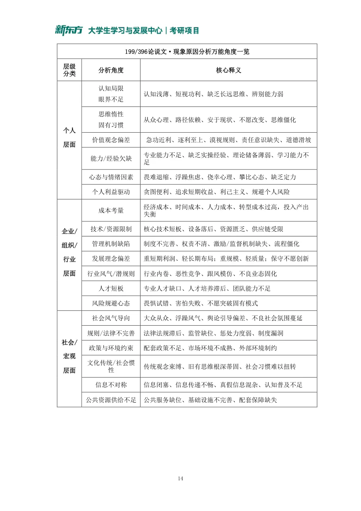
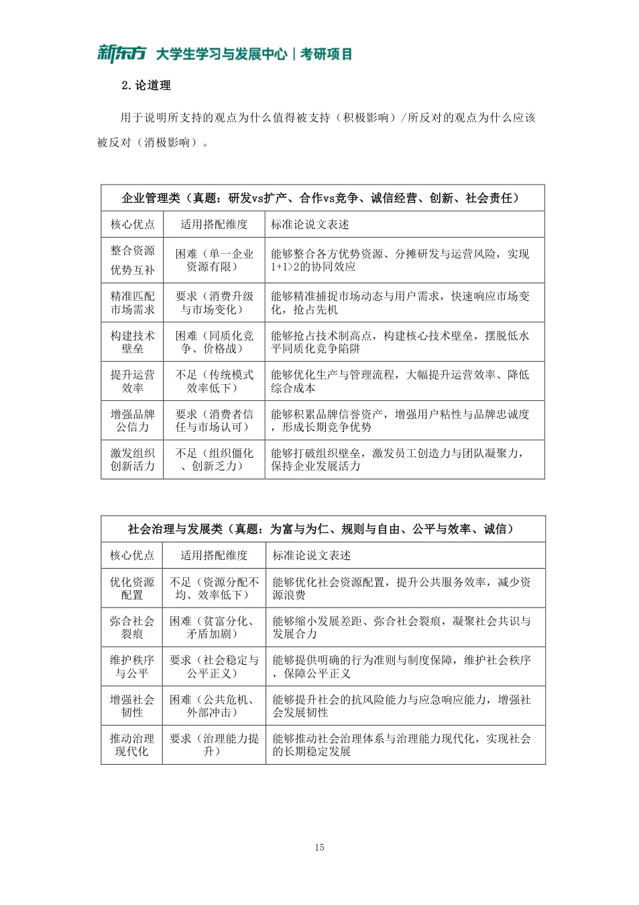
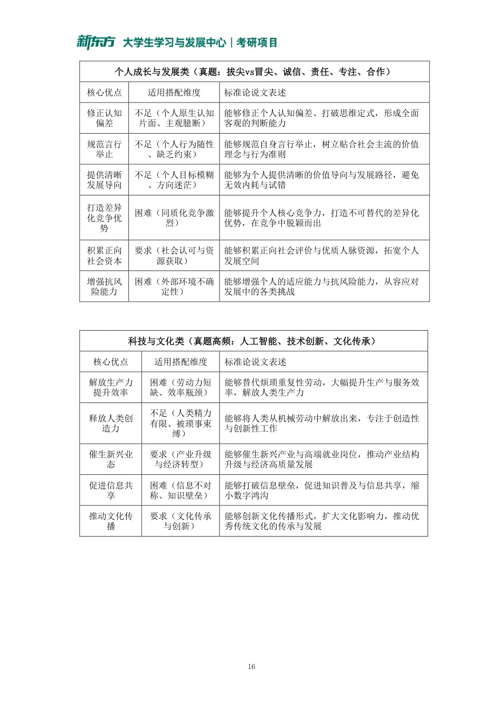
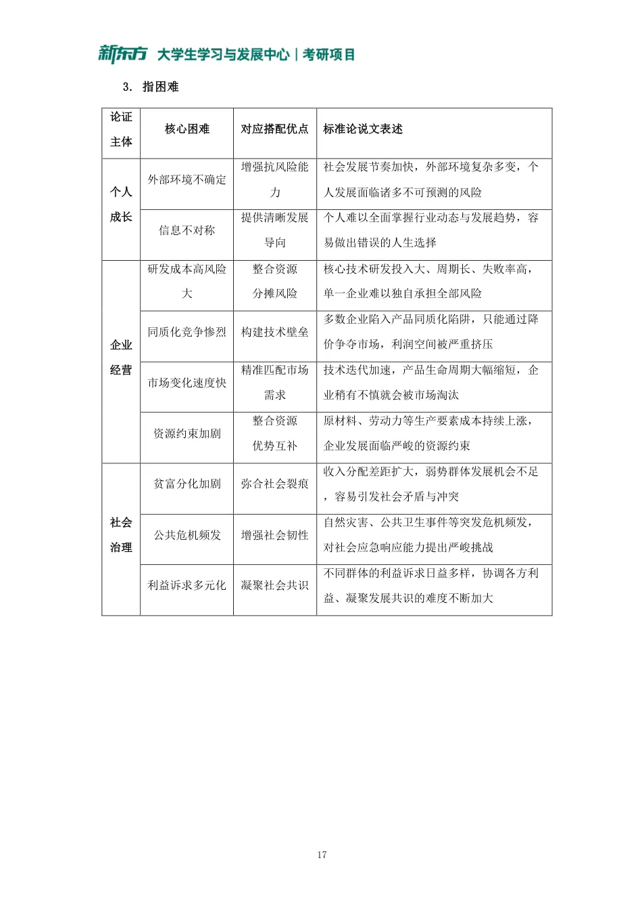
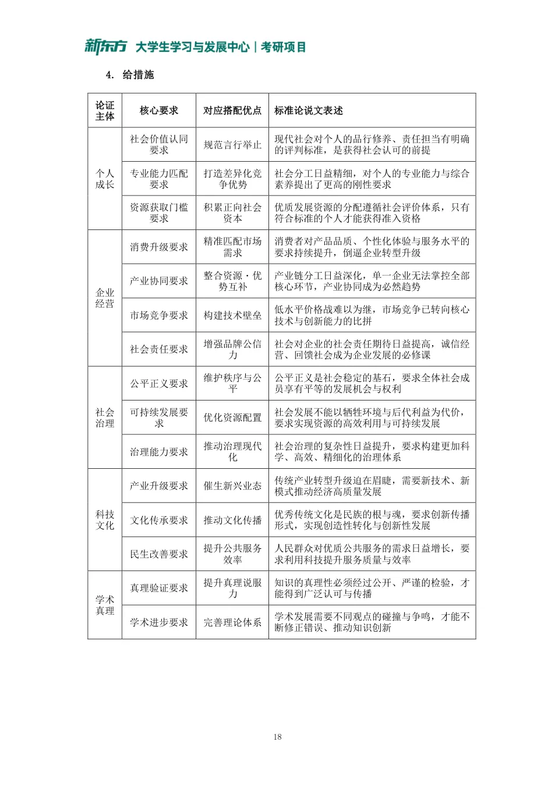

| 类型 | 点数 | 套数 | 什么时候想到它 | 写作句式 | 真题里长什么样 |
|---|---|---|---|---|---|
| 误用条件关系 | 17 | 10/12 | 就 / 一定 / 只有……才 / 不……就不 | 有 A 不一定就有 B:B 还可能由别的原因达成,A 也未必足以让 B 出现。 | 「破除望子成龙、降低期望值,就一定能让学业负担变轻吗?」——2023 经综 |
| 偷换概念 | 13 | 8/12 | 同一个词前后含义不同 / 由 A 说到 B | 难以认为 A 和 B 是完全相同的概念:前者指……后者往往指……论证者未界定便混用。 | 「眼见为实」的『实』≠『眼见者未必实』的『实』——2021 管综;「回国工作」≠「吃回头草」——2024 经综 |
| 以偏概全 | 11 | 8/12 | 有的 / 一些 / 个别 例子推出 所有 / 普遍 | 仅凭个别例子就得出普遍结论,样本不足且缺乏代表性,试想……反例很多。 | 「仅凭父母子女不讲礼节,就推出讲礼节是感情不深」——2021 管综;「部分年轻人租物→人们消费观念都变」——2026 管综 |
| 强加因果 | 10 | 5/12 | 因为 / 导致 / 归因于 / 原因就在 | 把 A 归因于 B 过于牵强:A 还可能另有原因,二者只是相关或同时出现。 | 「离异后不复合是因为纠结好马不吃回头草」——2024 经综;「喜欢课后玩游戏归因于网络技术」——2025 经综 |
| 绝对化 | 5 | 4/12 | 必然 / 绝对 / 凡是 / 都 / 只有 / 不是……就是…… | 断定过于绝对,忽略了中间状态与例外,二者可以并存。 | 「亲眼看到的不是表象就是真相」——2021 管综(非黑即白);「凡是要你花钱的事你都要慎重」——2021 经综 |
| 不当类比 | 3 | 3/12 | 就像 / 如同 / 跟……一样 | A 与 B 在关键方面并不相同,不能由 B 的结论类推到 A。 | 「学习像跑马拉松,所以不必纠结起跑线」——2023 经综;「毛嫱之美」类比沟通障碍——2025 管综 |
| 自相矛盾 | 2 | 2/12 | 前文说 X、后文说非 X | 论证者前面承认……后面又断定……自己否定了自己。 | 「默默无闻是尊崇的德行」与「不可能成为社会道德」——2022 管综 |
| 年 | 卷 | 话题 | 点数 | 谬误序列 |
|---|---|---|---|---|
| 2021 | 管综 | 眼见为实 / 表象与真相 | 6 | 偷换概念非黑即白偷换概念偷换概念以偏概全非黑即白 |
| 2022 | 管综 | 无私奉献与大众传媒 | 5 | 自相矛盾误用条件关系偷换概念偷换概念偷换概念 |
| 2023 | 管综 | 老年人应继续工作 | 6 | 以偏概全偷换概念误用条件关系误用条件关系误用条件关系以全概偏 |
| 2024 | 管综 | 培养人才与引进人才 | 5 | 偷换概念以偏概全以偏概全误用条件关系过于绝对 |
| 2025 | 管综 | 人的前见与沟通障碍 | 6 | 不当类比强加因果强加因果误用条件关系偷换概念自相矛盾 |
| 2026 | 管综 | 以租代买与消费观念 | 7 | 以偏概全另有他因条件关系谬误混淆概念条件关系谬误混淆概念强拉因果 |
| 2021 | 经综 | 反诈骗与防范机制 | 6 | 推不出推不出绝对判断以偏概全误用条件关系误用条件关系 |
| 2022 | 经综 | 数字阅读改变阅读习惯 | 4 | 以偏概全推不出推不出推不出 |
| 2023 | 经综 | 起跑线与减负 | 6 | 误用条件关系推不出不当类比推不出误用条件关系误用条件关系 |
| 2024 | 经综 | 好马不吃回头草 | 5 | 强加因果误用条件关系强加因果偷换概念单因 |
| 2025 | 经综 | 网络技术与课堂教学 | 6 | 以偏概全误用条件关系绝对判断误用条件关系偷换概念强加因果 |
| 2026 | 经综 | 免费公共服务与社会回报 | 6 | 强加因果以偏概全以偏概全不当类比单因误用条件关系 |
| 年 | 卷 | 材料(一句话) | 核心概念 | 关系 | 标题 |
|---|---|---|---|---|---|
| 2021 | 管综 | 穆藕初:道德教育+科学教育→实业中坚人才 | 道德教育 科学教育 | 因果(并列) | 道德科学教育并举,培育实业中坚人才 |
| 2022 | 管综 | 鸟类优化身体结构才会飞 | 优化结构 | 因果 | 优化结构助力企业发展 |
| 2023 | 管综 | 领导像指挥乐队 | 领导艺术 | 类比 | 领导艺术——控制大局,实现和谐统一发展 |
| 2024 | 管综 | 发散性思维的人言行与众不同 | 发散性思维 | 因果 | 打破常规思维,以发散促成长 |
| 2025 | 管综 | 人要被认可就得接受评价标准 | 评价标准 自我与群体 | 价值权衡 | 守自我之正,融群体之和 |
| 2026 | 管综 | 观众有全景视角,球员没有 | 全景视角(大局观) | 对比+因果 | 决策者当有大局观 |
| 2021 | 经综 | 食蚁兽每次只吃 3 分钟、不毁蚁穴 | 适度原则 | 因果 | 常守适度原则方能持续发展 |
| 2022 | 经综 | 老人免费乘车改为发津贴 | 福利形式 | 对比 | (观点:发津贴比免费乘车更能体现老年关怀) |
| 2023 | 经综 | 春运涉及诸多因素,需多部门合作 | 通力合作 | 因果 | 通力合作,应成社会难题破解之道 |
| 2024 | 经综 | 袁隆平一生只做一件事 | 专注 | 因果 | 专注应成人生底色 |
| 2025 | 经综 | 猫不能潜水、鱼不能上岸,欲望有边界 | 控制欲望 边界 | 因果 | 控制欲望,方可行稳致远 |
| 2026 | 经综 | 陀螺轴向相对稳定才转得久 | 动态平衡 | 因果 | 动态平衡应助力可持续发展 |
| 顺序 | 做什么 | 时间 |
|---|---|---|
| 找论点 | 明确论证围绕什么展开,圈出最终结论 | 8 分钟 |
| 析缺陷 | 找出缺陷,并简单分析(每个点想好「为什么推不出」) | |
| 成文章 | 按要求写成 600 字左右的文章 | 18 分钟 |
| 角度 | 什么时候用 | 核心逻辑 | 例子 |
|---|---|---|---|
| ① 存在制衡因素 (A 只是有利条件) | 原文说「只有 A 才能 B」,把 A 神化成必要条件 | 承认 A 对 B 有帮助,但 B 的达成还有关键制衡因素,只靠 A 不够 | 「只有线下授课才能掌握知识」→ 即便上了课,学生不专注、不复盘,也未必掌握 |
| ② 外部环境抵消 | 原文单一归因,只看 A 的正向作用 | 承认 A 已经落地,但外部负面变量会抵消它的作用 | 「降价就一定提升销量」→ 即便降价,市场低迷、竞品大幅促销,销量也未必涨 |
| ③ 配套体系不完善 | 原文认为一个举措 A 就能促成 B | 承认 A 已实施,但缺少制度、执行、保障配套,A 单独起不了效 | 「出台激励制度就能提升积极性」→ 缺考核机制、奖励不兑现、没有晋升配套,也难激发热情 |
| 谬误 | 写作模板 |
|---|---|
| 以偏概全 | 仅依据……就得出……的结论,有以偏概全的嫌疑。因为……只是……的一部分,……是这样的,而……由于……很可能截然不同。 |
| 绝对判断 | 论证者断定……,这一断定未免过于绝对,忽略了……。因此,上述断定是不成立的。 |
| 误用条件关系 | ①有……就一定会有……吗?有了……在一定程度上确实会……,但未必是……的充分条件。试想,如果只有……,而没有……,何谈……呢? ②只有……才……吗?……也许会有助于……,但未必是必要条件。因为除了……之外,……还可以……。 |
| 推不出 | ①由……未必能得到……。因为……。因此,上述结论是难以必然成立的。 ②由……就推出……是过于武断/有待商榷/令人怀疑的。 |
| 原稿的问题(讲义点评) | 怎么改 |
|---|---|
| 标题写成「似是而非的论证」这种套路格式 | 标题的核心写法是质疑题干的总结论,如「资本主义真的没有剥削吗」 |
| 首段用「一系列推断」 | 不要写「一系列」,把材料里的几个角度概括出来(资本家统筹资本、与社会主义对比财富流向等) |
| 以偏概全只说「美国只是国家之一」,显得单薄 | 补一个反例:同样实行资本主义的非洲国家,底层民众依然食不果腹 |
| 攻击「创造财富满足不了所有人」,攻击不到点上 | 造福人类的行为不要求满足所有人;应从「统筹资本的动机是个人敛财」和「财富集中、更多人被剥削」的角度打 |
| 指出问题的句子太长 | 指出问题的句子不要超过整段的 1/3,其余留给分析 |
| 主语不当(公有制「拿到钱」) | 改成「社会主义制度下的国家」,并补一句税收转移支付惠及更多人民 |
| 「首先……再次……」结构雷同 | 不同段落尽量写出结构差异,不要都是「A 不能推出 B」 |
论证者从资本家统筹资本和与社会主义社会对比社会财富流向等角度出发,试图论证资本主义的本质未必是剥削。但是,论证存在诸多逻辑漏洞,现分析如下:
首先,仅由美国等发达国家的辉煌未必能说明资本主义的本质不是剥削。我们不能忽略在同样实行资本主义的许多其他国家,如许多非洲国家,底层民众依旧由于受到资本的压榨而长期处于食不果腹的穷困状态。可见在很多地方资本与剥削仍然关系密切。
其次,资本家创造更多的社会财富就一定会造福人类吗?未必。资本家创造财富的出发点很可能仅仅是为了一己私利。在资本家创造「社会财富」的过程中,绝大多数的财富会最终集中于少数资本家手中,并成为进一步压迫民众的武器。此时再谈「造福人类」也就无异于空中楼阁了。
再次,社会主义和资本主义都会拿走人民的部分财产并不意味着马克思对资本主义存在偏见。因为社会主义国家的税收政策获取的财富最终往往用于完善公共设施、提供社会保障等,最终还是人民获益。反观资本家从劳动者身上拿走剩余价值是归个人所有,不能混为一谈。
最后,提供好的社会福利并不代表资本主义的本质不是剥削。不可否认,好的福利对于改善人民生活、缓解社会矛盾有一定的积极意义。但是好的社会福利是建立在资本家对剩余价值的攫取之上,推行好的福利只不过是安抚民众的手段,进而维护资本主义制度的稳定。怎么能用好的福利制度来美化资本主义的本质呢?
综上所述,如果我们轻信了「资本主义的本质未必是剥削」这一结论,很可能会对资本主义产生错误的认识。(614 字符)
| 话题 | 外部因素 | 内部因素 |
|---|---|---|
| 影响经济发展 | 政治:国际局势是否稳定、国际关系是否健康;经济:经济全球化、世界经济结构、通货膨胀、经济危机 | 政治:政治环境稳定、法律法规完善;经济:发展战略、产业政策、财政与货币政策、调节积累与消费的比例;文化:影响人们的价值判断和经济行为,文化产业直接带动经济;科技:带来新产品、新产业,拓展市场层次和范围 |
| 影响企业发展 | 制度环境:政治形势、宏观政策、法律法规;产业环境:行业规模、竞争状况、产业政策、行业壁垒、前景;市场环境:市场占有率、产品差异化、上下游 | 研发:开发适销对路的产品、改造传统工艺、消化吸收再创新;销售:分析客户潜在需求、协调资源;售后:受理投诉、跟踪服务、分析返修率;管理:企业文化与制度、人才培养与激励 |
| 顺序 | 做什么 | 时间 |
|---|---|---|
| 审题立意 | 分析材料,给出观点 | 4 分钟 |
| 构思提纲 | 构造论证层次、关键的论证过程 | 6 分钟 |
| 下笔成文 | 按要求写成 700 字左右 | 25 分钟 |
| 步骤 | 做什么 | 举例(2026 管综:观众与球员) |
|---|---|---|
| 1 确认关键词 | 圈出核心概念;判断关系类型(因果/类比/对比/价值权衡);判断价值倾向 | 核心概念:全景视角(大局观)、局部决策;关系:对比 + 因果;倾向:决策者应培养全局视野 |
| 2 确定写作维度 | 材料落在个人、企业还是社会 | 企业管理(决策管理)维度 |
| 3 拟定标题 | 核心概念 + 价值/做法 | 决策者当有大局观 |
| 4 选定文章结构 | 单一概念 → 问题—分析—对策 / 是什么—为什么—怎么做;两个概念 → 关系型 | 对比 + 因果 → 先讲为什么需要、再讲怎么做 |





| 类型 | 模板 |
|---|---|
| 由小到大 | ××修身;××齐家;××治国。 ××立其身;××成大业;××展国风。 |
| 正反 | ××止步不前;××奋勇直前。 敢于人前,造就未来希望;安于马后,错失成功良机。 ××让成功事半功倍;××让失败如影随形。 敢于××,永续长存;墨守成规/故步自封,逐渐消亡。 ××突破局限;××发挥优势。 |
| 时间顺序 | ××厚积薄发;××把握机遇;××引领发展。 ××回首过往;××立足当下;××谋划未来。 |
与"黑天鹅"不同，"灰犀牛"是一种可预见但又容易被忽视的风险，容易酿成重大危机。因此，我们要增强风险意识，有效防范"灰犀牛"。
增强风险意识能预见风险。潜在的风险演变为"灰犀牛"，往往需要一个从量变到质变的过程。如果我们能在这个过程中通过一些迹象去分析、推断出潜在的风险，那我们就具备了预见风险的能力。
如何才能在潜在的风险演变为"灰犀牛"之前去预见风险呢？这就要求我们必须具备较强的风险意识。有了较强的风险意识，就能提升我们对风险的感受和认知能力，而当这种感受和认知能力获得提升后，在面对一些与风险相关的蛛丝马迹时，我们就可以调动我们的认知系统，针对这些迹象进行有效地分析、合理地推断，从而实现预见风险的目的。
增强风险意识有助于更高效地化风险。即使在某些情况下，出现了"灰犀牛"。如果我们有较强风险意识，就能在问题出现时，以冷静的心态、理性的分析去寻找解决问题的方法，从而化解风险。比如，面对来自美国的打压，华为能有效地应对，从容化解。这得益于华为骨子里的风险意识。相反，如果我们没有较强的风险意识，对风险缺乏心理预期，缺少成熟的解决方案，一旦出现风险，则很可能就陷入混乱之中。比如，美国的次贷危机就是典型的"灰犀牛"，与民众的风险意识的不足就有很大关系。因此，我们要强化风险意识，提升化解风险的能力。
既然如此，如何提升我们的风险意识呢？一方面，要强化对风险的认识，保有洞察力。风险无处不在，要能敏锐地发现问题，深入地分析问题，合理地谋划解决方案。另一方面，也要不畏风险。风险无时不有，要敢于面对风险，从容应对。有风险并不可怕，可怕的是缺少风险意识。因此，我们要提升风险意识，既要警惕"黑天鹅"，更要防范"灰犀牛"。
当前，有些地方出现了以租代买的消费方式。以租代买花钱少、享受多，提高了物品的利用率，这一消费方式值得提倡。首先，以租代买经济实惠，体现了一种新的消费观念。过去人们看重物品所有权，生活物品一般是自己买来用，租用怕被他人看不起。时下一些年轻人选择租物使用，租物范围越来越广。由此可见，现在人们的消费观念都转变了，从过去购买所有权转向购买使用权。
其次，现在物品更新换代快，以租代买可以较低成本获得更多享受。很多相机品牌根据市场需求不断推出新品，若以租代买就可以及时体验到最新款相机带来的拍摄乐趣。这意味着，不以租代买就无法及时体验到这一乐趣。又如，奢侈品价格高，通常只有高收入者才会购买，但通过以租代买形式，中低收入者也可以获得使用奢侈品的机会，实现"低价高享"的愿望。这表明奢侈品不再是高收入者的专属，中低收入者也可拥有奢侈品。再次，以租代买能够提高物品利用率，既能避免浪费，又有利于环保。大到汽车小到充电宝，对这些商品如果人们习惯以租代买，就可避免很多浪费，避免浪费相对来说就是增加财富，由此可以断定，未来个人和社会财富将会快速增长。而如果不以租代买，就不能避免浪费；如果不能避免浪费，就会造成环境污染；如果造成环境污染，就会付出巨大的治理代价。所以，人们应该选择以租代买的消费方式。
当然，以租代买还需要保障条件。以租代买的支出包括押金和租金，它们均与个人信用有关。未来个人信用体系会不断健全，个人信用也会不断好起来，这样看来，以租代买的保障条件将会越来越完善。综上所述，以租代买好处多多，会让未来生活更加美好。
文章通过列举年轻人租物现象与租赁优势试图论证以租代买已成主流趋势，但其论证存在多处逻辑缺陷，分析如下：首先，部分年轻人选择租物，很难意味着全体消费者观念已转变。因为一些青年群体的租赁行为，可能仅是特定阶层在特定商品领域的尝鲜体验，或是短期经济约束下的权宜选择，并不能直接推导出"当下人们"普遍转向使用权消费。忽视这些结构性差异而将局部现象泛化为整体趋势，其结论的普适性便难以成立。因此，该推论缺乏充分的代表性基础。
其次，以租代买也很难作为体验最新款相机的唯一途径。因为材料将以租代买设定为获取拍摄乐趣的必要条件，这一判断显然过于绝对。消费者完全可以通过直接购买、向他人借用或参与品牌体验活动等多种方式实现同款体验。这种条件关系的单向认定缺乏对消费行为多样性的基本认知，难以必然成立。
再次，中低收入者获得奢侈品使用机会，无法必然代表奢侈品不再专属高收入群体。因为"使用"与"拥有"指向截然不同的关系。暂时租用仅赋予期限内的有限使用权，而"拥有"则意味着完整的所有权与处置权。材料将短暂的"低价高享"直接等同于"拥有"，所谓"专属"论断也就因此失去可靠依据，无法令人信服。
最后，信用体系完善未必会让个人信用越来越好。因为信用体系完善只是外部约束机制，个人信用好坏更多取决于自身履约行为；且以租代买的保障还需平台运营、商品质量等支持，材料强拉因果，忽略个体自主性与其他环节，缺乏逻辑合理性。
综上，租赁消费并非万能模式，其推广需理性审视具体场景与需求差异。
近年来，社会生活中出现了免费乘车、免费游园、免费咨询等免费服务现象，政府有关部门和一些企业免费向公众提供相关服务，得到了公众的拥护和赞扬。从现实来看，免费服务具有积极的社会意义。
提供免费服务是社会进步和繁荣的标志之一。许多获得免费服务的人收入不高，社会向他们提供免费服务，意味着这些低收入者会得到社会的关爱和帮助。有些获得免费服务的人努力工作回报社会，从而推动社会财富的增长，这就是说受到社会关爱和帮助的人都会对社会的进步和繁荣有所贡献。
免费服务可为公众带来福利，不用付费就能够得到所需要的服务，对公众而言，这是实实在在的福利。近年来政府有关部门大力推进免费服务建设。一项调查表明，某市近几年通过努力，已将70%的公园向公众免费开放，这表明未来该市所有的公园都将向公众免费开放。此外，该市所有的博物馆、图书馆均已向公众免费开放，可见该市所有的体育场馆也向公众免费开放。公众获得的免费服务越多，他们所获得的福利也就越多。
免费服务对于提供方也大有裨益。有些企业承担社会责任，向公众提供免费社交软件、免费的地图导航、免费数字资源等，赢得了公众的好感，企业的经营和发展就有了重要的基础和动力。有些企业没有提供这类免费服务，可以断定，他们将来很难在激烈的市场竞争中活下来。
总之，免费服务对社会发展具有积极意义，需要社会各方为此作出更多努力，争当免费服务的提供者。
文章试图通过列举免费服务案例、分析其社会意义等角度，说明免费服务具有积极的社会意义。其论证看似合理，实则存在诸多不恰当之处，现分析如下：首先，将免费服务与关爱低收入者强行关联，这一推理难以成立。因为社会提供的免费游园、免费咨询等服务通常是面向全体公众的，而非专门针对低收入群体，所以仅凭部分享受免费服务者收入不高，无法必然推出这些服务意在关爱低收入者。二者之间并不存在必然的因果联系，故此论证是值得商榷的。
其次，仅依据某市70%的公园已免费开放，就断言未来所有公园都将免费，这一推理难以成立。因为70%的开放比例只是当前阶段的数据，未来政策可能因财政压力、管理成本等因素而调整，试想若后续资金不足或维护成本上升，很可能得不到所有公园都免费的结论。因此，这种由部分推整体的论证缺乏充分依据。
再次，将公园、博物馆等公共服务场所与体育场馆进行类比，认为前者免费后者也应免费，这一推理存在不当。因为公园、博物馆等通常具有公共服务的公益属性，而体育场馆往往属于商业运营性质，二者在本质上并不相似，所以不宜简单类推。由此得出的结论也就难以必然成立了。
最后，有企业未提供免费服务就断定其难以在竞争中存活，这一断定未免过于绝对。因为企业的生存发展通常取决于产品竞争力、成本控制、商业模式等多重因素，提供免费服务只是经营策略之一，并非生存的必要条件。所以，仅凭是否提供免费服务来判断企业前景，是难以成立的。
综上，该论证存在多处逻辑缺陷，其关于免费服务具有积极意义的结论难以令人信服。
有位西方哲学家曾经指出，一个人在已有的知识体系、价值观念、思维方式等因素的影响下，会形成特定的主观立场，即"前见"。实际上，人们在相互沟通与理解外部世界时无法摆脱这一"前见"。早在先秦时期，庄子就说过，人们认为毛嫱是美女，但是鱼儿见到毛嫱只会惊恐的游走。这些都表明，人们在相互沟通与理解的过程中，主观立场会造成很大的障碍。
首先，不同个体在交流时无法避免偏见，偏见是每个人都可能拥有的，这一主观立场正是我们沟通与理解的障碍。我们对喜欢的人往往会宽厚包容，对不喜欢的人会吹毛求疵。科学研究表明，别人对我们的实际印象与我们自认为留给别人的印象往往存在差异。
其次，性别不同也会带来主观立场的不同，从而导致沟通障碍。比如，家庭中丈夫和妻子在思维方式上存在不小的差异。丈夫往往偏重理性，而妻子则偏重感性，所以双方从各自的主观立场出发讨论问题时，就会产生分歧与争议。
再次，不同文化之间的交流与理解也存在同样的问题。比如不同文化在审美标准上的主观差异通常会导致误解，与中国历史上伟大诗人李白作品相比，唐代僧人寒山的作诗作更受一些美国人的喜爱。白居易的诗篇更受一些日本人青睐，所以不同文化背景下的读者在评判作家作品的高下时经常产生争议。
虽然主观立场造成了沟通与理解的障碍，但这并不意味着人们无法进行沟通与理解，千百年来人们通过换位思考来克服障碍，摆脱个人主观立场。
文章通过一系列论证试图得出"主观立场会造成很大交流障碍"这一结论。其中论证看似合理，但却存在着诸多不当之处。现分析如下：首先，论证者将鱼儿对毛嫱的反应和人与人的沟通理解进行类比，由此得出结论主观立场会造成沟通障碍。上述类比是不恰当的，因为鱼儿和人类在本质上不相似，鱼儿惊恐的游离毛嫱很可能是出自生物惧怕潜在危险的本能，而人与人之间主观立场的差异却通常来自认识方式的迥然。因此，通过上述类比得出的结论也是难以必然成立的。
其次，论证者把人们沟通理解存在障碍归因于无法摆脱的"前见"，这一归因未免过于牵强。导致沟通理解出现阻碍的真正原因很可能是认知差异、表达能力不足等，而与"前见"没有直接关系。因此，难以得出主观立场会造成沟通理解很大障碍的结论。
再次，有夫妻思维方式的差异就一定会有分歧与争议吗？有了理性与感性的差异在一定程度上确实会带来看问题的不同角度，但未必能作为产生分歧的充分条件。试想，如果仅仅只有思维差异，而双方能够互相尊重彼此观点并针对有差异的问题进行耐心沟通，何谈讨论问题时的分歧与争议呢？
最后，首先，在上述论证中先强调人们沟通理解外部世界无法摆脱"前见"，但紧接着又提出人们能通过换位思考摆脱个人主观立场。这两处表述有着明显的对立关系，很难在逻辑上前后贯通，出现了自相矛盾。因此基于这种说法得出的结论，也就显然难以成立了。
综上所述，再去强调"主观立场会造成很大障碍"的观点也有有失偏颇了。
如今，我们已经进入网络时代。网络技术对于基础教育质量的提升具有重要的促进作用。
首先，网络技术促进优质教育资源的共享。在党和政府的关怀和支持下，网络技术设备逐步走进我国各地的中小学校这就为提升基础教育质量提供了必要的硬件保障，越来越多的老师和学生就可以通过这些设备共享到全国各类教育资源。
其次，网络技术促进偏远学校师资状况的改善。通过网络技术，许多偏远地区的孩子在本校也能听到名师讲课，与相隔千里的老师和同学进行学习交流，这样就解决了偏远地区基础教育以前存在的优秀师资不足的问题。
再次，网络技术促进课堂教学质量的提高。网络资源的运用，必然会使课堂教学生动起来。以前主要靠黑板、粉笔加课本，有些学生接受不了许多抽象的知识；现在通过网络技术让他们更方便搜索、观看与课本相关的视频、动画或图片，就能帮助他们准确掌握相关知识，课堂教学质量也就会大幅度提升。有人认为，那些只是播放教学视频的网络课程缺少现实课堂中的师生互动，教学效果不够理想，其实，只要在视频制作阶段设计一些师生问答，这个问题就可顺利解决。
当然，网络技术在中小学的应用也存在一些弊端，有些中小学生会因此喜欢课后玩游戏，浪费大量学习时间。广大中小学校要充分利用好网络技术，尽可能扬长避短，促进学生健康成长。
文章试图通过分析网络技术促进资源共享、改善师资、提升课堂质量等角度，说明网络技术能显著提升基础教育质量。其论证看似合理，但却存在诸多不恰当之处，现分析如下：首先，由网络设备走进学校就推出师生能共享全国各类教育资源，有以偏概全的嫌疑。因为网络资源仅仅是教育资源的一部分，并非所有类型的教育资源都能通过网络实现共享，还包括实验设备、实践基地等无法数字化的资源。仅凭网络设备普及就断言能共享全部教育资源，其推理显然不够严谨。
其次，有网络技术让偏远地区孩子听到名师讲课，就一定能解决师资不足的问题吗？远程听课在一定程度上确实有助于改善教学条件，但未必能作为解决师资不足的充分条件。因为师资缺乏通常涉及数量、专业能力等多重维度，而远程听课仅能提供单向知识传递，若缺乏本地教师的针对性辅导与答疑，何谈真正解决师资不足的问题呢？
再次，由学生能搜索观看视频动画，难以必然推出他们能准确掌握相关知识。因为知识的掌握通常需要理解、练习、反馈等多个环节的系统配合，而观看视频仅仅是信息输入的一种方式，若缺乏后续的巩固与检验，学生很可能只是被动接收信息而未能真正内化知识，所以课堂教学质量也就未必会因此大幅提升。
最后，论证者把学生课后喜欢玩游戏归因于网络技术在中小学的应用，这一归因未免过于牵强。导致学生课后玩游戏的真正原因很可能是缺乏自律意识或家庭教育缺位，而与网络技术的应用没有直接关系。因此，难以得出网络技术应用必然导致学生浪费学习时间的结论。
综上，该论证存在多处逻辑缺陷，其核心结论难以令人信服。
人才是社会经济发展的重要因素，许多单位都十分注重培养自己需要的人才。其实，人才除了靠自己培养，还应该靠引进。
常言道："十年树木，百年树人。"这说明培养人才需要相当长的时间。即使不需要一百年，现在把一个人从小学培养到大学毕业，至少也要十五六年。由此可见，靠自己单位来培养人才根本不能解决当务之急。
其次，只注重培养而不注重引进并留住人才，结果往往事与愿违。例如，企业辛辛苦苦培养的一些人才跳槽了，一些高校的优秀毕业生出国了。因此，只着眼于培养，只能是为他人作嫁衣裳。
再次，从历史上来看，秦孝公靠商鞅变法使秦国强大了，而商鞅是卫国人，是秦孝公招揽引进的。可见，招揽引进人才，就能使国家强大起来。
可喜的是，如今不少单位出台了各种措施，引进了越来越多的人才。这样，我国的人才数量必将大幅增长，国家就会更加富强了。
人才是一个国家经济发展的重要因素，而作者对如今的人才培养政策提出了不同的见解，认为"人才培养应该靠引进"。然而，其旁征博引的论证看似成立，实则存在不合理之处。
首先，难以认为"单位培养人才"和"把人从小学培养到大学毕业"是完全相同的概念。前者通常指单位针对自身需求开展的职业技能培训、岗位能力提升等，而后者则往往指基础教育阶段的系统培育。论证者未能清楚界定二者，混淆了人才培养的不同阶段与场景，这显然是值得商榷的。
其次，仅仅依据部分企业人才跳槽、高校优秀毕业生出国的现象就得出只着眼于培养只能为他人作嫁衣裳的结论，有以偏概全的嫌疑。因为这些人才流失的情况只是人才培养结果中的一小部分，试想还有众多培养的人才选择留任或报效祖国，很可能得不到培养就是为他人作嫁衣裳的结论。
再次，只有引进人才才能使国家强大起来吗？引进人才也许会有助于国家发展，但未必是必要条件。因为除了引进人才之外，国家强大还需要完善的制度保障、坚实的经济基础、先进的科技水平等多重因素共同作用。论证者将引进人才视为国家强大的唯一关键，忽视其他重要条件，因此这一判定难以成立。
最后，论证者断定"各单位引进人才就会使我国人才数量大幅增长"，这一断定未免过于绝对。忽略了不少单位引进的人才多是国内跨单位流动的存量人才，并非新增的人才增量，这些人才只是改变了就业归属，并未增加国家人才总量。
因此，认为引进人才就会让人才数量大幅增长的断定是很难成立的。
综上所述，若要证明"人才应该依靠引进"，作者还需要进一步完善自己的论证。
常言道："好马不吃回头草。"人们说这句话的时候，往往不是指马而言，而是用来比喻人事。在我们看来，好马完全可以吃回头草。
例如，一般人认为夫妻离异了就应该分道扬镳，但分手的他或她根本没有想到，言归于好、破镜重圆也可能是一个不错的选择，为什么一定要纠结于"好马不吃回头草"而义无反顾地背道而驰呢？
又如，现在跳槽已是司空见惯的事，但跳槽者往往会发现，外面的世界很精彩，但外面的世界又很无奈。跳槽者大可不必再纠结于"好马不吃回头草"，完全可以回原单位工作，因为回到原单位工作，比到其他单位工作无疑更加熟悉，更容易获得成功。说穿了，如今不愿吃回头草的人，不过是因为觉得面子上过不去。其实，为了成就自己的事业，根本不应该碍于面子而不吃回头草。
现在出国留学的学生很多，他们更应该打破"好马不吃回头草"的旧观念，学成后回国为祖国的建设贡献力量，因为国内的"草"很有营养，吃回头草不但有利于国家的事业，也有利于自己的发展，能使自己成为新时代的千里马。
文章通过列举夫妻离异、跳槽者回原单位、留学回国等事例，试图论证"好马完全可以吃回头草"的核心观点，其论证过程看似合理，实则存在诸多不恰当之处，现分析如下：首先，将夫妻离异后不重归于好归因于纠结于"好马不吃回头草"，这一归因未免过于牵强。因为导致夫妻不重归于好的原因通常涉及感情破裂、性格不合等深层因素，而非单纯受制于某一俗语的心理暗示。如果仅凭这一俗语就断定离异夫妻应当重归于好，那么可能忽略了婚姻修复所需的复杂条件。所以，将复杂的情感决策简单归因于俗语束缚，显然是难以成立的。
其次，有跳槽者回原单位工作更熟悉，就一定会更容易获得成功吗？熟悉环境在一定程度上确实有助于快速适应，但未必能作为成功的充分条件。因为成功通常取决于个人能力、岗位匹配度、行业发展前景等多重因素，而熟悉环境只是其中之一。如果仅仅只有熟悉环境，而原单位存在发展空间受限、人际关系矛盾等问题，何谈更容易获得成功呢？
再次，很难认为"回国工作"和"吃回头草"是完全相同的概念。因为前者通常指的是留学人员学成后回到祖国就业，是一种基于家国情怀的职业选择；而后者则往往指的是离开原单位后又返回原处。论证者未能清楚界定这两个概念，便草率地将留学回国等同于吃回头草，这显然是值得商榷的。
最后，论证者把成为"千里马"归因于国内的"草"很有营养，这一归因未免过于简单。因为人才的成长通常取决于个人能力、教育背景、实践经验等多重因素，而非仅凭发展环境这一单一条件。即便国内提供了良好的发展土壤，若缺乏个人努力与专业积累，也难以真正成为千里马。所以，仅认为国内环境好就能造就千里马是值得商榷的。
综上，该论证存在多处逻辑缺陷，其得出的核心结论难以令人信服。
随着人口的老龄化，大家都在谈论老年人还要不要继续工作的话题。我们认为，老年人应该继续工作。
我国《宪法》规定："中华人民共和国公民有劳动的权利和义务"。由此可见，老年人继续工作是法律赋予他们的权利。
据统计，我国2019年人均预期寿命已经达到77.3岁，这说明老年人的健康水平大大提高了，所以老年人完全有能力继续工作。
如果老年人不再继续工作而退出劳动力市场，就势必会打破劳动力市场的原有平衡，从而造成社会劳动力短缺。如果老年人继续工作，就能有效地避免这一问题。此外，老年人有权利享受更高质量的生活。他们想增加收入，改善生活，就应该继续工作。再说，有规律的生活方式有益于身体健康，而工作实际上是一种有规律的生活方式，所以老年人继续工作还有益于其身体健康。
上述论证通过一系列推理说明老年人应该继续工作，其中的论据、论证过程和结论都存在着诸多问题，不能必然成立，现分析如下。
首先，仅仅依据《宪法》中"公民有劳动的权利和义务"这一条款，就得出"老年人应该继续工作"的结论，有以偏概全的嫌疑。因为《宪法》同时规定了退休制度，保障老年人的休息权利，论证者片面引用单一条款，忽略了法律的完整规定。试想结合退休制度综合考量，很可能得不到这一结论。
其次，难以认为"人均预期寿命延长"和"健康寿命延长"是完全相同的概念。前者通常指人口整体的平均存活年限，而后者则往往指身体健康、具备劳动能力的年限。论证者未清晰界定二者，便以人均预期寿命提高为由主张老年人应继续工作，混淆了核心概念的内涵，这显然是值得商榷的。
再次，老年人退出劳动力市场就一定会造成社会劳动力短缺吗？未必。老年人退出劳动力市场在一定程度上可能影响劳动力供给，但未必能作为造成短缺的充分条件。试想，若年轻劳动力持续补充、劳动力效率提升或产业结构优化，何谈短缺呢？因此，论证中对条件关系的判定难以成立。
最后，论证者断定"工作作为有规律的生活方式，必然有益于老年人身体健康"，这一断定未免过于绝对。忽略了老年人的身体状况存在个体差异，部分老年人可能因体力、精力不足，无法适应工作强度，甚至可能因工作劳累损害健康。因此，将工作对健康的益处一概而论到所有老年人身上，是很难成立的。
综上所述，由于该论证存在着诸多的逻辑问题，故其难以推出最后的结论，"老年人是否应该继续工作"还应从长计议。
要减轻中小学生过重的学习负担，还必须加强引导和管理。
首先，我们应引导家长破除"望子成龙"的传统观念，因为这一观念是加重中小学生学习负担的重要原因之一。千百年来有多少家长都望子成龙，但大部分的孩子还是成了普通人，如果家长都能正视这一事实，破除"望子成龙"的传统观念，把期望值降低一些，过重的学习负担马上就减轻了。
其次，我们应该改变"不能输在起跑线上"的观念。众所周知，不能输在起跑线上未必能赢在终点线上，既然如此，我们又何必纠结于"起跑线"呢？学习就像马拉松，是长期的过程，马拉松的冠军就不一定是赢在起跑线上的人，如果家长都明白了这个道理，也就不会给子女加压，孩子们就不会存在过重的学习负担了。
再次，我们应该实施素质教育，废除应试教育。应试教育所带来的课业，无疑加重了中小学生的学习任务，如果我们全面地实施素质教育就能有效地减轻学生的负担。最后，如果有关部门再进一步出台更为严格的减轻中小学生学习负担的法规，减负就能获得成功。
文章试图通过转变家长观念、改变起跑线认知、实施素质教育、出台减负法规等角度，说明加强引导和管理就能减轻学生负担。其论证看似合理，实则存在诸多不恰当之处，现分析如下：首先，有家长破除"望子成龙"观念、降低期望值，就一定能使过重负担马上减轻吗？降低期望值在一定程度上确实可能缓解部分压力，但未必能作为负担马上减轻的充分条件。因为学生负担通常是学校课业、升学竞争与家长期望共同作用的结果，若仅有家长调整期望而课程设置与评价体系未变，负担通常难以在短期内显著下降。
其次，论证者将学习类比为马拉松，由此得出不必纠结于起跑线的结论，这一类比并不恰当。因为学习和马拉松在本质上并不相似，前者是知识逐层积累的过程，初始基础往往会影响后续的吸收效率；后者是固定距离的体能竞技，胜负取决于终点冲刺。因此，通过这一类比得出的结论是难以必然成立的。
再次，实施素质教育未必能有效减轻学生的负担。因为素质教育虽然可能减少机械性的应试课业，但若评价体系仍以分数为核心标准，学生通常仍需应对各类选拔性考试，素质教育的形式反而可能叠加新的学习任务，导致负担不降反增。
最后，出台更严格的减负法规同样难以保证减负必然成功。因为减负的成效通常取决于法规的执行力度与监管机制，若仅有制度层面的约束而缺乏有效的落实与监督，法规很可能沦为一纸空文。
综上，该论证存在多处逻辑缺陷，其得出的核心结论难以令人信服。
默默无闻无私奉献，虽是人们尊崇的德行，但这种德行其实不可能成为社会的道德精神。一种德行必须借助大众媒体的传播，让大家受其感染，并化为自觉意识，然后才能成为社会的道德精神。但是默默无闻，无私奉献的精神所赖以存在的行为特点，是不事张扬，不为人知，既然如此，它就得不到传播，也就不可能成为社会道德精神。退一步讲默默无闻，无私奉献的善举经媒体大力宣传后为更多人所了解，这就从根本上使这一善举失去了默默无闻的特性，既然如此，这一命题就无从谈起了。
再者默默无闻的善举一旦被媒体大力宣传，当事人必然会受到社会的肯定与赞赏，而这就是社会对他的回报。既然他从社会得到了回报，怎么还可以说是无私奉献呢？由此可见，默默无闻，无私奉献的德行注定不可能成为社会的道德精神。
论证者从默默无闻、无私奉献的特性是不事张扬等出发，得出结论"默默无闻等不会成为社会的道德精神"。但论证过程存在诸多缺陷。
首先，论证中先称"默默无闻、无私奉献是人们尊崇的德行"，但紧接着又断定其"不可能成为社会的道德精神"。人们尊崇的德行往往具备成为社会道德精神的基础，二者存在明显对立，难以在逻辑上前后贯通，出现了自相矛盾。因此基于这种矛盾说法得出的结论，显然难以成立。
其次，只有借助大众媒体传播才能成为社会道德精神吗？大众媒体传播也许会有助于德行的推广，但未必是必要条件。因为除了大众媒体传播之外，德行还可以通过家庭熏陶、学校教育、人际口碑传递等多种方式扩散，进而成为社会道德精神。因此，论证中对条件关系的判定难以成立。
再次，难以认为"当事人不事张扬"和"善事不为人所知"是完全相同的概念。前者通常指当事人自身不愿主动宣扬善举，而后者则往往指善举未被他人知晓。论证者混淆了二者内涵，忽视了善举可通过他人转述等方式传播，便得出无法成为社会道德精神的结论，这显然是值得商榷的。
最后，由"善举经媒体宣传后被更多人了解"未必能得出其"失去默默无闻特性"的结论。因为"默默无闻"强调的是当事人实施善举时的不事张扬，而宣传是事后对善举的传播，二者针对的是不同阶段的状态，并无逻辑冲突。因此，仅以宣传后的知晓度否定当初的默默无闻，推导过程难以必然成立。
综上所述，如果轻信了"默默无闻等德行不能成为社会的道德精神"的言论，可能会影响人们对社会道德精神的认识。
国内发布一项国人阅读方式的调查报告显示：大城市数字阅读率在不断地增长，这说明数字阅读正在改变国人的阅读习惯，即将成为国人主要的阅读方式。
数字阅读比较传统的纸质阅读有绝对的优势。各类的电子阅读器，在实体店和网上比比皆是，人们可以很方便地购买和使用。全球信息一体化，使人们可以充分地使用丰富的阅读资源，这更加加速了数字阅读的发展。
另外，为了满足受众的需求，电子类的报纸、杂志、书籍也在快速增加，而原有的纸质媒体如古籍也在飞速地以数字化体现。这些大量的事实佐证了，传统的纸质阅读正在被人们所舍弃而寿终正寝。
文章试图通过大城市阅读率数据、电子阅读器普及等论据，说明数字阅读即将取代纸质阅读，其论证看似合理，实则存在诸多不恰当之处，现分析如下：首先，仅以大城市的数字阅读率增长就推断全体国人的阅读习惯正在改变，未免有失偏颇。因为大城市的经济水平与科技普及度通常高于中小城市及农村地区，其阅读趋势未必具有普遍代表性。不同地区人群的阅读条件与偏好存在显著差异，若忽视这种差异而将局部现象推广至全体，其结论自然难以成立。
其次，电子阅读器购买方便未必能说明数字阅读具有绝对优势。因为购买渠道的便利性仅反映供给端的充足，而人们是否真正选择数字阅读，通常取决于阅读体验、内容质量及个人偏好等多重因素。如果读者更享受纸质书的翻阅感与收藏价值，那么即便电子阅读器触手可及，也难以得出数字阅读占绝对优势的结论。
再次，全球信息一体化使资源更丰富，但这未必会加速数字阅读的发展。因为丰富的网络资源可能更多地被用于信息检索或学术研究，而非系统性的数字阅读行为。数字阅读的发展通常需要内容供给、阅读习惯与技术支撑等多方面协同，仅凭资源丰富这一单一因素，很难必然推出其加速发展的结论。
最后，电子类报刊书籍增加及纸质媒体数字化，并不代表纸质阅读正在消亡。因为纸质媒体的数字化体现恰恰说明其内容仍有价值，且人们长期形成的纸质阅读习惯与心理依赖通常难以在短期内改变。如果读者仍然偏爱纸质书的沉浸式体验与收藏乐趣，那么纸质阅读便不会轻易被舍弃。
综上，该论证存在多处逻辑缺陷，其得出的核心结论难以令人信服。
常言道，"耳听为虚，眼见为实"，其实"眼见者未必实"。从哲学上说，事物表象不等于事物真相。我们亲眼看到的，显然只是事物的表象，而不是真相。只有将表象加以分析，透过现象看本质才能看到真相。换言之，我们亲眼看到的未必是真实的东西，即"眼见者未必实"。
举例来说，人们都看到了旭日东升，夕阳西下，也就是说，太阳绕地球转。但是，这只是人们站在地球上看的表象而已，其实这是地球自转造成。由此可见，眼见者未必实。
我国古代哲学家老子早就看到了这一点。他说过，人们只看到了房子的"有"(有形的结构)，但人们没看到的"无"(房子中无形的空间)才有实际效用，这也说明眼见者未必实。
老子还说，讲究表面的礼节是"忠信之薄"的表现。韩非解释时举例说，父母和子女因为感情深厚而不讲究礼节，可见讲究礼节是感情不深的表现。现在人们把那种客气的行为称作"见外"，也是这个道理。这其实也是"眼所见者未必实"的现象。因此，如果你看到有人对你很客气，就认为他对你好，那就错了。
论证者从表象不等于真相、老子和韩非等人的言论出发，得出结论"眼见者未必实"。但这一过程存在诸多缺陷。
首先，难以认为"眼见为实"的"实"和"眼所见者未必实"的"实"是完全相同的概念。前者通常指亲眼所见的客观事实或真实场景，而后者则往往指事物的本质或真相。论证者未明确界定二者内涵，便草率得出"眼见者未必实"的结论，混淆了"事实表象"与"事物本质"的核心区别，这一推理显然是值得商榷的。
其次，"亲眼看到的不是表象就是真相"吗？未必。表象与真相并非仅有的两种选择，二者并非绝对对立关系，亲眼看到的既可能是事物的表象，也可能是真相的直接呈现，很多时候表象正是真相的外在表现形式，二者完全可以共存。论证者忽略了中间状态与共存可能，因此得出"眼见者未必实"的结论是值得商榷的。
再次，难以认为"太阳绕地球转的表象"和"眼见的实际情况"是完全相同的概念。因为前者通常指的是基于观感推导的错误结论，而后者则往往指的是眼睛直接观察到的直观现象。论证者未能清楚界定这两个概念，便草率地得出眼见者未必实的结论，这显然是值得商榷的。
最后，仅仅依据父母子女因感情深厚而不讲究礼节这一特殊情况，就得出讲究礼节是感情不深的表现的结论，有以偏概全的嫌疑。因为父母子女的相处模式只是人际交往中的极小一部分，试想许多挚友之间注重礼节却依旧感情深厚，很可能得不到该结论。
一言以蔽之，如果我们轻信了"眼见者未必实"的言论，恐怕会给我们带来很多困扰。
人们受骗上当的事时有发生，乃至有人认为如今的骗术太高明而无法根治。其实，如今要根治诈骗并不难。
首先，从道理上讲，正义终将战胜邪恶，这是历史已证明的规律。诈骗是一种邪恶的行为，最终必将被正义的力量彻底消灭。既然如此，诈骗怎么不能根治呢？
其次，很多诈骗犯虽然骗术高明，但都被绳之以法，这说明在法治社会中，诈骗犯根本无处藏身。这样，谁还敢继续行骗呢？没有人敢继续行骗，诈骗不是被根治了吗？最后，还可以通过全社会的防范来防止诈骗的发生。诈骗的目的，无非是想骗取钱财。凡是要你花钱的事情，你都要慎重考虑。例如，有些投资公司建议你向他们投资，有些机构推荐你参加高收费的培训，有些婚恋对象向你借巨款。诸如此类，其实都不靠谱。所有的人如果都不相信这些话诈骗就无法得逞。诈骗无法得逞，不就是被根治了吗？如果建立更加有效的防范机制，根治诈骗就更容易了。
总之，无论从道理上讲，还是从行骗者或被骗者的角度来看，如今要根治诈骗根本不是难事。
文章试图通过正义必胜的规律、法治社会的威慑力等角度说明"如今要根治诈骗并不难"，其论证过程看似合理，但却存在诸多不恰当之处，现分析如下：首先，从正义终将战胜邪恶这一规律，未必能推出诈骗能被根治的结论。因为正义战胜邪恶并不意味着邪恶被彻底消灭，诈骗手段往往会随着社会发展不断升级和再生，即便某种形式的诈骗被遏制，新的诈骗方式也可能随之出现。因此，将正义必胜等同于诈骗根治，显然是缺乏充分依据的。
其次，很多诈骗犯被绳之以法，也未必能说明诈骗犯无处藏身、无人敢继续行骗。因为被绳之以法的诈骗犯只是其中的一部分，可能还存在大量未被发现的漏网之鱼。
此外，若犯罪成本较低、惩罚力度不足，通常难以起到足够的警示作用，仍然会有人铤而走险。所以，由此推出诈骗被根治的结论难以必然成立。
再次，"凡是要你花钱的事情，你都要慎重考虑"这一断定未免过于绝对。因为花钱的性质和金额通常存在较大差异，日常小额消费或必要的生活支出并不需要过度慎重。该论述忽略了不同消费场景的特殊性，将"花钱"这一宽泛概念一概而论，显然难以得出可靠的结论。
最后，仅仅依据个别投资公司建议投资、机构推荐培训等案例，就推出"诸如此类都不靠谱"的结论，有以偏概全的嫌疑。因为这些个案只是众多类似情况中的一小部分，正规的金融机构、合法的培训机构通常有其合规运营的保障。因此，由个别案例推广至所有情况，其推理是难以成立的。
综上，该论证存在多处逻辑缺陷，其"根治诈骗并不难"的核心结论难以令人信服。
在观看足球比赛时，观众们经常会责怪球员有更好的进球路径，却选择了不合格的路径，事实上，球员在球场上处在瞬息万变的激烈战斗中，没有观众所具有的全景视角。
核心概念:全景视角（大局观）、瞬息万变、局部决策、观众与球员
关系类型:对比型——观众的全景视角与球员的受限视角形成鲜明对比；因果型——缺乏全景视角是因，决策偏差与选择失当是果
价值倾向:材料暗示不应苛责球员，强调拥有全景视角（大局观）对正确决策的决定性意义，隐含"决策者应培养全局视野"的肯定态度
选择理由:材料中"全景视角"是观众与球员的本质区别，也是决策质量差异的关键。通过"身处瞬息万变战斗"与"拥有全景视角"的对比，揭示了"当局者迷"的管理困境，凸显了"大局观"对于突破局部局限、作出正确决策的核心价值。
2.确定写作维度企业管理维度（决策管理领域）。材料以足球比赛为隐喻，实则映射企业决策中管理者常因身处竞争一线、信息繁杂而缺乏全局视野，导致战略误判，属于企业战略决策与组织领导议题。
3.拟定标题决策者当有大局观
4.选定文章结构采用"问题－分析－对策"框架。因材料呈现的是决策者因视角受限而陷入局部最优的管理困境，需先剖析其成因，再论证危害，继而阐述大局观的价值，最终提出培养全局视野的解决之策。
结构选择理由:本题以足球场景隐喻管理决策，呈现出"旁观者视野清晰、当局者视角受限"的典型矛盾。若采用"总分总"框架，易流于空泛；若采用"正反对比"，则难以深入剖析"为何决策者往往缺乏大局观"的深层机制。"问题－分析－对策"框架能够层层递进：先描述"身处战斗而缺乏全景视角"的现象与根源，再分析其对企业决策的危害（局部最优、战略短视），继而正面论证大局观的价值，最后提出培养全局视野的具体路径。这种结构既回应了材料中观众与球员的视角差异，又能针对性解决"如何提升决策者视角高度"的核心问题，最契合"强调大局观"的写作要求。
开头段（总起）:首先概括材料所述现象——观众因拥有全景视角而轻易责怪球员选择不当，却忽视了身处瞬息万变的实战中，球员恰恰缺乏这种全局视野。继而指出这种"当局者迷"的困境不仅存在于球场，更普遍存在于企业管理之中，最终亮明本文观点：决策者应当超越局部局限，培养和运用大局观，以全局视野引领企业发展。
本论第一段（分析根源）:剖析决策者陷入局部视角的深层原因。采用企业模板中的"降本"角度（反向类比）。阐述在企业运营中，管理者如同球场上的球员，每日面对瞬息万变的市场变化、紧迫的业绩压力与繁杂的日常事务，被各种即时信息裹挟。这种"身在此山中"的状态，使其难以抽离出来审视全局，往往只能看到眼前局部利益，如同被对手围堵的球员只能看到最近传球路线，却忽略了更佳的战略选择。这种视角的天然局限，正是决策者面临的首要挑战。
本论第二段（阐述危害）:论证缺乏大局观的严重后果。采用企业模板中的"防风"角度。阐述当管理者仅凭局部信息作判断时，容易陷入"局部最优"陷阱，选择看似解决当下问题的方案，实则损害整体长远利益。资源错配、战略短视、部门壁垒等问题由此产生，如同球员强行突破却错失空位队友，不仅浪费进攻机会，更可能让企业在激烈的市场竞争中丧失主动权，最终在累积的决策偏差中失去战略先机。
本论第三段（正面论证）:论证拥有大局观的价值。采用企业模板中的"增效"角度。阐述大局观能够帮助决策者跳出局部利益的纠葛，从全产业链、全生命周期的视角审视问题，识别短期波动背后的战略机遇。具备大局观的企业，能够提前预判行业趋势，优化资源配置，在短期诱惑与长期价值之间作出平衡选择，如同拥有全景视角般洞察市场空档，在复杂竞争中作出制胜决策。
本论第四段（对策）:采用企业模板撰写措施段。从三方面提出"如何培养大局观"：首先从制度层面，建立跨部门信息共享与战略复盘机制，打破信息孤岛，确保决策基于全面数据；其次从文化建设角度，倡导"站在月球看地球"的全局思维，鼓励管理层跳出部门本位；最后从方法工具角度，引入外部顾问与大数据分析，借助"外脑"延伸决策视野，弥补内部局限。
结尾段（总结）:回扣标题，总结全文观点，强调决策者唯有摆脱局部视角的桎梏，培养全局洞察能力，才能在复杂多变的商海中作出正确抉择。并以展望收束——以大局观引领决策，方能行稳致远。
足球比赛中，球员恰恰缺乏观众所具有的全局视野。这一场景揭示了管理者的困境：身在其中者往往视角受限而难以把握最优路径。因此，决策者应当超越局部局限，以大局观引领企业发展。
身处激烈竞争，决策者易陷局部视角。在企业运营中，管理者如同球场上的球员，面对瞬息万变的市场变化、紧迫的业绩压力与繁杂的日常事务，被各种即时信息裹挟。这种"身在此山中"的状态，使其难以抽离审视全局，往往只能看到眼前局部利益，如同被围堵的球员只能看到最近传球路线，却忽略了更佳的战略选择。这种视角的天然局限，正是决策者面临的首要挑战。
缺乏大局观，企业将陷入决策风险。当管理者仅凭局部信息作判断时，容易陷入“局部最优”陷阱，选择看似解决当下问题的方案，实则损害整体长远利益。资源错配、战略短视、部门壁垒等问题由此产生，如同球员强行突破却错失空位队友，不仅浪费进攻机会，更可能让企业在竞争中丧失主动权，最终在累积的偏差中失去战略先机。然而，拥有大局观能够显著提升决策质量。全局视野使管理者能够跳出局部利益的纠葛，从全产业链、全生命周期的角度审视问题，识别短期波动背后的战略机遇。具备大局观的企业，能够提前预判行业趋势，优化资源配置，在短期诱惑与长期价值之间作出平衡选择，如同拥有全景视角般洞察市场空档，在激烈商海中作出制胜决策。培养大局观，企业需打出组合拳。
首先，从制度层面建立跨部门信息共享与战略复盘机制，打破信息孤岛。
其次，从文化建设角度，倡导"站在月球看地球"的全局思维，鼓励管理层跳出部门本位。
最后，从方法工具角度，引入外部顾问与大数据分析，弥补内部局限。
综上所述，决策者唯有摆脱局部视角的桎梏，培养全局洞察，方能在复杂商海中作出正确抉择。以大局观引领，方能行稳致远。
陀螺是我国民间流行的娱乐工具之一。旋转时，其轴向只有在一段时间内相对稳定，陀螺才能旋转较长时间。这一现象对人们的工作和生活有一定的启示。
核心概念:动态平衡、相对稳定、持续发展（持续旋转）
关系类型:因果型——在动态中维持相对的轴向稳定是因，陀螺得以长时间旋转是果；材料通过陀螺旋转的物理现象，揭示"动态平衡"与"持续发展"之间的内在逻辑关联。
价值倾向:材料对陀螺旋转现象持中性描述态度，但通过"只有……才能……"的条件句式，明确肯定了"在动态中维持相对稳定"这一状态的价值，隐含"动态平衡是实现可持续发展的必要条件"的核心主张。
选择理由:材料围绕陀螺旋转的物理现象展开，"轴向相对稳定"与"旋转较长时间"构成核心因果链条，前者是动态中的平衡状态，后者是持续发展的隐喻，因此"动态平衡"与"可持续发展"是贯穿材料的两大核心概念，也是全文论证的核心标的。
2.确定写作维度社会发展与个人发展双维度（认知决策/管理领域）。材料为物理现象类比类命题，其核心寓意既适用于个人成长、职业发展中的节奏把控与状态调整，也可延伸至企业经营管理、社会治理等管理类核心议题，属于宏观认知与可持续发展类话题，完全契合管理类联考对管理者辩证思维、系统思维的考察方向。
3.拟定标题动态平衡应助力可持续发展
拟定逻辑:遵循"核心概念+价值意义"的拟题原则，紧扣材料核心概念"动态平衡"与"可持续发展"，直接点明二者之间的因果关联，同时以"应"字体现呼吁性，观点鲜明、简洁凝练，符合联考论说文标题"精准扣题、表明主旨"的核心要求。
4.选定文章结构采用经典"总分总"框架，搭配"递进说理+问题－对策"的复合结构。该框架是联考中最稳妥、适用范围最广的结构，既能完整回应类比类材料的核心寓意，又能实现"亮明观点—界定概念—分层论证—分析困境—提出对策—总结升华"的完整论证闭环，完全契合联考论说文"观点明确、论证充分、结构完整、逻辑严谨"的评分标准。
结构选择理由:本题属于典型的"物理现象类比类单观点型"命题，材料通过陀螺旋转的物理现象给出了明确的价值导向，核心是论证"动态平衡何以助力可持续发展"这一核心观点的合理性与必要性。若采用"关系型"框架，本题虽涉及"动态"与"稳定"两个要素，但二者并非需要辩证统一的并列关系，而是因果递进关系，适配性不足；若单纯采用"正反对比"框架，易陷入案例堆砌，难以完成多层深入的逻辑论证。而经典"总分总"框架，既能完整回应类比材料的核心信息，又能层层递进完成严谨的逻辑论证，同时兼顾现实困境与落地对策，是本题最贴合联考评分要求的写作框架。
开头段:严格遵循联考论说文开头"引材料+亮观点"的核心要求，分三句完成闭环。第一句高度概括材料核心现象——陀螺旋转时须在动态中维持轴向的相对稳定，方能长久旋转；第二句明确表示认同，点明这一物理现象蕴含的深刻哲理；第三句亮明全文核心观点——在工作和生活中，我们应善用动态平衡，助力可持续发展。三句话精准完成"引—立—亮"的核心动作，字数控制在80字以内。
第二段（概念界定）:采用"关键概念解释"的方法，融合"自我否定法+原词拆解法"。先通过自我否定法，厘清"动态平衡"的常见认知误区——并非一味求稳的静态停滞，也非无序变化的动荡摇摆；再通过原词拆解法，界定其核心内涵——在持续变化的环境中主动调整、维持系统关键要素相对稳定的状态。仅解释"动态平衡"这一最核心概念，字数控制在100字左右。
第三段（核心说理1——从"提升治理质量"角度论证）：采用社会模板中"提质——促进社会公平、提升事项质量"的论证逻辑。主旨句点明"动态平衡有利于提升社会整体的运行品质"。论证思路：动态平衡→协调各方利益、化解潜在冲突→促进社会公平→化解矛盾分歧→降低推进社会发展的阻力→提升社会治理质量→使更多社会成员受益。字数控制在150字左右。
第四段（核心说理2——从"扩大受益群体"角度论证）：采用社会模板中"扩容——扩大受益群体"的论证逻辑，融合"大环境论证"方法，与第三段形成"治理品质—受益范围"的双维递进。先点明当今社会处于深度调整期的时代背景，再阐述动态平衡通过促进合作提升生产效率、增加社会财富，最终使发展成果惠及更多社会成员。以"这客观上让发展成果能够惠及更多社会成员成为可能"收束。字数与第三段持平。
第五段（困境分析）:采用"分析反对论证"的段落思路，客观指出"动态平衡"在实践中的核心困境——平衡点难以精准把控，过度追求稳定易滑向僵化保守，过度强调动态又可能陷入无序混乱，多数人往往难以在二者之间找到恰当的平衡区间。字数控制在100字以内。
第六段（对策提出）:针对上一段提出的"平衡点难以把控"的核心困境，提出针对性解决措施——既要建立敏锐的反馈机制，及时感知系统状态的变化信号；也要保持适度的弹性空间，为动态调整留有余地；更要坚守核心价值坐标，确保调整不偏离根本方向。字数与第五段持平。
第七段（结尾）:一句话回扣全文核心观点——以动态平衡之智，行可持续发展之路。简洁有力，不提出新观点，字数控制在20字左右。
陀螺旋转时，须在动态中维持轴向的相对稳定，方能长久旋转。这一物理现象蕴含的哲理令人深思。在工作和生活中，我们应善用动态平衡，助力可持续发展。
所谓动态平衡，并非一味求稳的静态停滞，也非无序变化的动荡摇摆，而是在持续变化的环境中主动调整、维持系统关键要素相对稳定的状态。其核心在于"动中求稳、变中守恒"。
从社会治理质量来看，动态平衡有利于提升社会整体的运行品质。动态平衡往往能够通过协调各方利益诉求、化解潜在冲突摩擦的方式促进社会公平。而基于社会公平的不断实现与巩固，社会中源于不公与失衡的矛盾和分歧也就更容易得到有效化解，进而极大降低了良性推进社会发展的制度阻力与交易成本，显著提升了社会治理的整体质量与运行效能，使更多社会成员在其中获得实实在在的受益。
动态平衡有利于让社会发展成果惠及更多社会成员。当今社会处于深度调整期，技术迭代加速、利益格局重塑，各种不确定性因素交织叠加，单一僵化的运行模式已难以适应这一复杂环境。而动态平衡往往可以通过灵活调整、适度兼容的方式促进社会各界的合作，无形中提升了社会生产的效率，使得社会财富资源变得更加丰沛。这客观上让发展成果能够惠及更多社会成员成为可能，在变革时代中实现包容性增长。
当然，动态平衡的实践往往面临现实困境——平衡点难以精准把控。过度追求稳定易滑向僵化保守，过度强调动态又可能陷入无序混乱，多数人往往难以在二者之间找到恰当的平衡区间，稍有不慎便偏离正道。
要摆脱这一困境，既需建立敏锐的反馈机制，及时感知系统状态的变化信号；也需保持适度的弹性空间，为动态调整留有余地；更要坚守核心价值坐标，确保调整不偏离根本方向。
以动态平衡之智，行可持续发展之路，于万千变化中寻得那永恒的支点。（全文约708字）
通常情况下，人们都希望被他人认可，被社会承认。这种心理会促使他们去接受某种评价标准，因为只有接受了标准并身体力行，他们才能被社会肯定，否则便会被认为不合群。
核心概念:他人认可、社会承认、评价标准、不合群逻辑关系：辩证对立统一关系。材料核心呈现一组社会常态矛盾——人渴望社会认可，故而主动遵从社会评价标准、融入群体；但过度迎合标准、依附群体会丧失自我，核心考察个体坚守自我与融入群体适配社会的平衡关系，并非单一否定迎合、肯定自我。
价值倾向:摒弃非黑即白的极端思维，不否定“遵从合理标准、融入群体”的积极意义，也不推崇“脱离群体、固守自我”的孤僻姿态，倡导守自我之正，融群体之和的辩证处世智慧，追求合群而不盲从、独立而不孤绝的人生状态。
立意
选择理由:材料的核心痛点并非“接受评价标准、追求社会承认”，而是“一味迎合标准、丧失自我”。多数考生容易片面批判从众、否定群体适配的意义，而本文立意精准抓住材料本质，承认社会标准与群体适配的正向价值，同时警示盲目迎合的危害，最终落脚于自我坚守与融入群体的平衡，思辨性更强，更贴合论说文辩证分析的核心要求。
2.确定写作维度聚焦个人价值塑造与社会适配双重维度。以个体人格坚守为核心，延伸至个人与社会、个体与群体的相处智慧，既探讨个人如何在时代浪潮中保持个性、坚守本心，也兼顾社会层面的包容氛围构建，跳出单一的个人素养视角，格局更全面。
3.拟定标题守自我之正，融群体之和
4.选定文章结构采用辩证递进式结构（肯定价值—指出弊端—破局对策—总结升华），是适配本题的最优框架。
结构选择理由:本题材料是中性社会现象，无绝对对错，最忌片面立论。该结构先肯定“遵从社会标准、融入群体”的合理性，避免极端化论证；再剖析盲目迎合、丢失自我的危害，正反对照凸显矛盾；接着从个人、社会双维度给出落地解决对策，完成“破而后立”；最后升华主旨，层层递进、逻辑闭环，完美契合论说文“思辨、严谨、落地”的评分要求。
开头段（总起立论，引出核心矛盾）
写作思路:先立足材料普遍现象，点明人人皆有渴望社会认可、主动契合群体标准的常态；再转折指出盲目迎合的弊端，点出当下人们在合群中迷失自我的普遍问题；最后精准亮明全文核心观点——需把握坚守自我与融入群体的平衡艺术，开篇点题、统领全文，快速建立文章思辨基调。
本论第一段（正向论证，肯定合群价值）
写作思路:秉持辩证思维，先承认社会评价标准、群体规范的积极意义，规避片面否定的误区。将抽象的“评价标准”具象化为职场规则、社会公德两类生活化场景，通过职场拼搏晋升、低碳环保获认可的实例，论证遵从合理标准、融入群体是个人成长、社会进步的基础，证明“合群、守标准”的必要性，为后文辩证分析铺垫。
本论第二段（反向论证，剖析盲从危害）
写作思路:由正转反，聚焦“一味迎合、削足适履”的核心弊端，从古今双维度举例论证危害。以梵高坚守独特画风成就艺术经典的正面案例，对比当下年轻人被消费主义标准捆绑、攀比虚荣迷失自我的反面现实，古今对照、虚实结合，有力证明盲目迎合群体标准、放弃自我的代价，强化文章论证力度。
本论第三段（对策落地，双维度破局）
写作思路:针对前文的矛盾与危害，提出针对性解决方案，分为个人、社会两大维度，层次清晰。个人层面，坚守本心、独立思考，同时开放包容、适配群体，实现自我与群体的平衡；社会层面，从教育培育包容意识、媒体引导正向舆论入手，搭建包容多元的社会环境，为个体“守正融和”提供外部支撑，对策落地、全面具体，不空洞说教。
结尾段（总结升华，回扣主旨）
写作思路:回扣全文核心论点，再次辩证重申“社会认可可贵，自我个性更珍”的核心认知；凝练总结全文主旨，强调以平衡智慧守正创新，实现“融入群体又卓然独立”的人生状态，最终升华至时代成长、个人致远的高度，收束全文，结构完整、立意升华。
在社会的大舞台上，人们往往心怀被他人和社会承认的渴望。为求这份认可，许多人选择拥抱既定的评价标准，以契合群体。然而，在追求认同的浪潮中，我们需把握好坚守自我与融入群体的平衡艺术。
不可否认，社会评价标准宛如导航灯，为个人行为指引方向。于职场，遵循公司的业绩考核规范，员工奋力拼搏，达成目标，方能收获晋升机会与同事赞誉。顺应当下环保时代潮流，践行垃圾分类、低碳出行之人，备受推崇，为营造美好家园添砖加瓦，成为众人学习楷模。契合标准，确实是打开社会认可之门的钥匙。
但倘若一味迎合，不假思索地将自我塞进标准“模具”，削足适履，便会陷入困境。梵高摒弃传统绘画的刻板印象，以奔放浓烈的色彩、扭曲夸张的线条勾勒内心的狂热与挣扎，受尽嘲讽，不被理解，可他若为求认可，放弃独特画风，美术史上恐怕将缺失一颗璀璨明珠。放眼当下，不少年轻人被消费主义的评价标准捆绑，为追求名牌、豪车等物质标签，背负巨债，在攀比虚荣的漩涡中迷失自我，失去生活原本的质朴与快乐。
那么，我们又该如何破局呢？在个人层面，我们需要在坚守自我与融入群体间需求平衡，一方面，我们要聆听内心声音，挖掘自身潜能与志趣，明确个人核心价值，不随波逐流，养成独立思考的习惯。另一方面，以开放胸怀接纳合理标准，将个人追求融入群体发展脉络。在社会层面，社会各界还需共同努力营造包容氛围。在教育中将包容理念融入课程，从小培养学生尊重差异的意识；媒体则要发挥舆论引导作用，通过正面报道传递包容正能量。
总之，我们需铭记，被社会承认固然重要，但莫让渴望认同的热忱，燃尽自我个性的火种。以智慧权衡，持守正创新之姿，绘就融入群体又卓然独立的人生篇章，方能在时代浪潮中稳健前行，绽放属于自己的光芒。
有位哲人说过，生命就是一团欲望，欲望是最难控制的。猫喜欢吃鱼却不能潜水，鱼喜欢吃蚯蚓却不能上岸，这就是自然规律。大自然让猫不能潜水，鱼不能上岸，给他们的欲望划定设立边界，好让他们不因欲望的膨胀而为所欲为。有意思的是，迄今为止，猫和鱼都还没有突破自己的禁区。
核心概念:欲望控制、边界意识、长远发展
关系类型:因果型——主动控制欲望、坚守边界是因，实现长远发展是果。材料以猫和鱼的自然禁区为喻，揭示欲望若无边界约束便会膨胀失控的底层逻辑，进而推导出"控制欲望方可长远"的核心主张。
价值倾向:材料对"欲望膨胀"持明确否定态度，对"自然规律为欲望设立边界"持肯定态度，隐含"人类应主动为欲望划定边界"的核心主张。
选择理由:材料全程围绕"欲望"与"边界"两个核心要素展开——"欲望是最难控制的"点明欲望的本质特征，"大自然给欲望划定边界"点明边界对欲望的约束功能，"猫和鱼没有突破禁区"则从结果层面验证了边界存在的合理性。因此"控制欲望"与"长远发展"是贯穿材料的核心主线。
2.确定写作维度个人发展维度（认知决策/修身自律领域）。材料以生命与欲望的哲学命题为切入点，核心探讨的是个体如何在欲望的驱使下保持理性、主动约束自身行为边界，关乎个人成长中的自律与长远规划，属于个人认知决策与修身自律议题，完全契合管理类硕士联考对管理者自我管理能力的考察方向。
3.拟定标题控制欲望，方可行稳致远
拟定逻辑:紧扣材料核心概念"控制欲望"，搭配"方可行稳致远"点明核心价值，观点鲜明、对仗工整，标题中出现"可"字，符合题干"出现'应''需'等动词"的要求，且控制在15字以内。
4.选定文章结构采用经典"总分总"框架，搭配"递进说理+问题－对策"的复合结构。该框架既能完整回应寓言材料的核心寓意，又能实现"亮明观点—界定概念—分层论证—分析困境—提出对策—总结升华"的完整论证闭环，完全契合联考论说文"观点明确、论证充分、结构完整、逻辑严谨"的评分标准。
结构选择理由:本题属于典型的"寓言类单观点型"命题，材料通过猫与鱼的自然禁区这一隐喻，给出了明确的价值导向——控制欲望、坚守边界才能实现长远发展。若采用"关系型"框架，本题无两个需辩证统一的并列核心要素，适配性不足；若采用"正反对比"框架，易陷入对材料案例的简单复述，难以完成多层深入的逻辑论证。而经典"总分总"框架，既能完整回应寓言材料的核心寓意，又能层层递进完成严谨的逻辑论证，同时兼顾现实困境与落地对策，是本题最贴合联考评分要求的写作框架。
开头段:严格遵循"引材料+亮观点"的核心要求。第一句高度概括材料核心——以猫与鱼的自然禁区为喻揭示欲望需有边界的哲理；第二句表示认同；第三句引出全文核心观点——控制欲望，方可行稳致远。字数控制在80字以内。
第二段（概念界定）:聚焦"控制欲望"这一核心概念，采用自我否定法+外延阐述法，厘清其内涵——并非压抑所有合理需求，而是对膨胀的贪欲进行理性约束。字数100字左右。
第三段（核心说理1——"长短期论证"）：采用方法论中"递进/长短期论证"的方法。主旨句点明"控制欲望常能为个人带来更大收益"。从短期和长期两个时间维度展开：短期看，控制欲望帮助个体抵御冲动诱惑、守住安全底线；长期看，持续的自律积累为个人构筑稳健的行为模式与信用资本，为长远发展打下基础。以"可见，控制欲望的确能够为个人带来更大的收益"收束。字数控制在150字以内。
第四段（核心说理2——从"提升自我价值"角度论证）：采用个人模板中"升值——提升自我价值"的论证逻辑，与第三段的"风险防控"维度形成鲜明的逻辑差异。主旨句点明"控制欲望有助于提升自我价值"。论证思路：控制欲望→主动聚焦核心目标→持续深入一个领域→激发内在潜能→潜能内化为能力→获得不可替代的竞争力。字数严格控制在150字以内，纯逻辑论证。
第五段（困境分析）:分析核心主张在推进中可能遭遇的困难——欲望的即时满足感与长期自律的延迟回报之间存在天然矛盾，多数人难以抵御短期诱惑。字数100字以内。
第六段（对策提出）:针对困境提出解决方案——需建立清晰的自我认知与行为准则，以理性审视欲望，用长远目标约束当下选择。字数与第五段持平。
第七段（结尾）:一句话回扣标题与主旨，简洁有力。字数20字左右。
猫与鱼的自然禁区，揭示了一个深刻的哲理：欲望若无边界约束，终将膨胀失控。笔者深以为然。在人生与事业的发展中，唯有主动控制欲望，方可行稳致远。
本文所论的控制欲望，并非压抑一切合理需求与进取之心，而是对超出自身能力与规则边界的膨胀贪欲进行理性约束，避免因盲目追逐短期满足而丧失长远发展的根基。控制欲望常能为个人带来更大收益。短期来看，控制欲望通常可以帮助个体冷静审视眼前的冲动诱惑，避免因一时贪念而越过法律与道德的规则红线，从而牢牢守住个人发展的安全底线与基本盘面；而从长远来看，控制欲望也可以凭借持续不断的自律积累，为个人逐步构筑起稳健可靠的行为模式与宝贵的信用资本，为更长远的良性发展打下坚实基础。可见，控制欲望的确能够为个人带来更为丰厚的人生收益。
控制欲望有助于提升自我价值。控制欲望往往能够通过主动聚焦核心目标、抵制分散精力的各种诱惑而持续深入一个领域，在专注中不断突破认知边界，继而激发我们内在深层的潜能。而被激发出的潜能又很可能会在此后持续的实践与积累中逐步内化为我们的核心竞争能力，显著提升我们分析判断与解决问题的综合水平，让我们在专业领域中获得他人难以替代的独特竞争优势，最终实现人生价值的稳步提升与增长。
当然，控制欲望的践行往往面临现实阻碍。欲望的即时满足感与长期自律的延迟回报之间存在天然矛盾，多数人往往难以抵御眼前的短期诱惑，最终在舒适区中放弃了长远规划，堕入即时享乐的陷阱而不可自拔。
要破解这一困局，需建立清晰的自我认知与行为准则，以理性审视欲望的合理性，用长远目标约束当下的选择，在每一次诱惑面前坚守边界，以自律成就自由。
控制欲望，方能行稳致远，以理性之光照亮通往长远发展的坦途。（全文约705字）
发散性思维是指不依常规，寻求变异和多种答案的思维形式。具有这种思维形式的人，其言行往往会与众不同。
核心概念:发散性思维（不依常规、寻求变异、多种答案）、与众不同（言行差异、创新性、非传统）。
关系类型:因果型——"具备发散性思维"是因，"言行与众不同"是果。
价值倾向:材料中性描述现象，但结合"求异"与"多种答案"的定义，隐含对创新意识的肯定。
选择理由:"发散性思维"是材料反复强调的中心词，其定义的三个维度构成了论证的基础。材料通过描述其带来的"与众不同"，点出了个体独特性与社会常规之间的矛盾焦点。
2.确定写作维度个人素养维度。材料以人的思维方式及其言行表现为切入点，探讨的是个人如何通过思维转变应对复杂环境，虽可扩展至社会价值，但立足点在于个人素质的培育。
3.拟定标题打破常规思维，以发散促成长
4.选定文章结构采用"总分总"框架（经典模式）。由于本题核心在于论证一种特定思维方式（A）对个人发展及解决问题（B）的积极作用，适合通过分论点逐层说理，并最终给出解决对策。
结构选择理由:本题属于"个人素养类"命题，重点在于阐述发散性思维的内涵及价值。采用"总分总"框架，可以通过横向思路补充因果环节（为何发散思维能解决复杂问题），同时结合纵向思路从能力提升、风险抵御等多个维度展开，最后回归到个人如何培养这种思维的对策上，结构稳健且逻辑清晰。
开头段（总起）:概括材料中关于发散性思维的定义及"与众不同"的特征。合理过渡到这种思维在当下复杂环境中的稀缺性与必要性。点明主旨：我们应具备发散性思维，以多元路径应对各类挑战。
本论第一段（说理）:论证发散性思维能提升自我价值。采用个人模板中的"升值"角度，说明打破常规如何激发内在潜能，让人在专业领域取得突破。
本论第二段（说理）:论证发散性思维能增强抗风险能力。采用个人模板中的"抗风"角度，说明多元化的思考路径能让人在面对生活挑战和突发困境时，拥有更多备选方案，从而提升心理韧性。
本论第三段（对策）:提出个人如何培养发散性思维。从思想意识（摒弃惯性）、能力训练（多角度思考）、实际行动（勇于尝试）三个层面给出具体建议。
结尾段（总结）:总结全文，强调在瞬息万变的时代，唯有思维不再"循规蹈矩"，人生才能"与众不同"，并呼吁大家拥抱思维的变革。
材料告诉我们，发散性思维是不依常规、寻求变异的思维形式。这种"与众不同"恰恰是个人脱颖而出的关键。因此于本文看来，我们应积极拥抱发散性思维，以多元化的视角去应对各类复杂的问题。
发散性思维有助于提升个人的自我价值。当一个人不再局限于传统的路径依赖，而是尝试从多角度、多方向探索解决方案时，能够深入挖掘自身的内在潜能。这种深度的思维探索会促使个人打破认知壁垒，在专业领域或特定技能上取得创造性的进步，从而提升个人能力。随着能力的提升，个人在工作与生活中自然能够创造出更多无可替代的价值，实现自我超越。
发散性思维亦能增强我们抵御人生风险的能力。奉守常规或许能获得短暂的安稳，但在突发困境面前往往显得僵化脆弱。发散性思维强调"寻求多种答案"，这使得我们在面对生活的挫折和挑战时，能够迅速调整心态，从多维度剖析问题，找到更多可行的备选方案。这种灵活的应对机制不仅能增强心理韧性，更能让我们在遭遇风险时从容不迫，通过思维的变通化解危机，为人生保驾护航。
面对未来的不确定性，个人应积极行动起来，培养这种宝贵的思维素质。
首先，在思想意识层面，要勇于摒弃畏难心态和思维定式，树立"答案不唯一"的价值准则。
其次，在能力提升角度，应通过刻意的多向思考训练，主动突破舒适区，打磨在复杂情况下的洞察力。
最后，在实际行动中，要敢于将奇思妙想付诸实践，在不断地反馈与调整中提升思维的有效性。
综上所述，发散性思维不仅是寻求变异的工具，更是个人成长的强大动力。虽然其言行可能异于常人，但唯有敢于打破常规、探索多元路径，方能突破思维定式的局限，开辟创新发展的新天地。让我们以发散思维为刃，劈开现实的桎梏，在与众不同的道路上创造出属于自己的精彩，从而更好地走向未来。
在人的一生中，有些人只做一件事。如袁隆平院士一生致力于杂交水稻研究，创建了超级杂交稻技术体系，使我国杂交水稻研究始终居于世界领先水平。
核心概念:专注（一生只做一件事）、不平凡人生（卓越成就）
关系类型:因果型——专注是因，铸就不平凡人生是果
价值倾向:材料通过袁隆平院士的正面案例，对"一生只做一件事"的专注精神持明确肯定态度，隐含"专注是成就卓越的核心路径"的核心主张
选择理由:材料以"有些人只做一件事"为总起，以袁隆平院士的专注实践为论据，全程围绕"专注"这一核心品质展开，"专注"与"不平凡人生"的因果关系是材料的主线，也是全文论证的核心标的。
2.确定写作维度个人发展维度（个人成长/职业发展领域）。材料以个人一生为时间跨度，以袁隆平院士的个人实践为案例，核心探讨的是个体如何通过专注精神实现卓越成就，属于个人素养与职业发展议题，契合管理类联考对管理者品质与决策思维的考察方向。
3.拟定标题专注应成人生底色
4.选定文章结构采用经典"总分总"框架，搭配"递进说理+问题－对策"的复合结构。该框架能完整回应材料核心寓意，实现"亮明观点－界定概念-分层论证-分析困境－提出对策－总结升华"的完整论证闭环，契合联考论说文评分标准。
结构选择理由:本题属于典型的"正面案例单观点型"命题，材料通过袁隆平院士的正面案例给出了明确的价值导向，核心是论证"专注精神"的必要性与价值。若采用"关系型"框架，本题无两个需辩证统一的并列核心要素；若采用"正反对比"框架，易陷入案例堆砌。而经典"总分总"框架既能完整回应材料核心信息，又能层层递进完成严谨的逻辑论证，同时兼顾现实困境与落地对策，是最贴合联考评分要求的结构。
开头段:第一句高度概括材料核心——有人以一生之力深耕一事，终成非凡。第二句表示认同——这种专注精神值得深思与推崇。第三句引出全文核心观点——专注，应成为每个人的人生底色。
第二段（概念界定）:采用"自我否定法+原词拆解法"，聚焦"专注"这一核心概念。先指出专注并非机械重复或故步自封，再界定其内涵——将有限的时间与精力持续聚焦于特定领域，在长期深耕中实现认知的纵深突破与能力的持续积累。
第三段（核心说理1——从"提升自我价值"角度论证）：采用个人模板中"升值——提升自我价值"的论证逻辑。主旨句点明"专注有助于提升自我价值"。论证思路：专注→沉浸研究对象→突破旧有认知模式→激发内在潜能→潜能内化为能力→提升解决问题水平→积累成功体验→获得更高自我价值感。论证语言简洁，纯逻辑推导，不堆砌案例，字数严格控制在150字左右。
第四段（核心说理2——从"培育社会风气"角度论证）：采用个人模板中"培风——培育社会风气"的论证逻辑，与第三段形成"个人—社会"的双维递进。主旨句点明"专注有助于培育崇尚深耕的社会风气"。论证思路：专注→取得突破性成果→树立良好榜样→感召更多人效仿→形成摒弃浮躁、崇尚深耕的社会风气→推动社会良性发展。字数与第三段持平。
第五段（困境分析）:分析专注精神在践行中可能遭遇的核心困难——短期回报诱惑与浮躁社会风气的双重冲击，点明多数人会因追求即时反馈而放弃长期深耕。第六段（对策提出）：针对困境提出解决措施——需从思想层面树立长期主义价值观，从行动层面主动屏蔽外界干扰，以坚韧定力抵御浮躁风气。
第七段（结尾）:严格遵循联考论说文结尾"扣题+总结+升华"的核心要求，回扣材料中袁隆平院士"一生只做一件事"的精神内核，强调专注对于铸就不凡人生的根本价值，一句话完成全文收束，简洁有力，字数控制在20字左右。
人生路上，有人以一生之力深耕一事，终成非凡。这种专注精神值得深思与推崇。专注，应成为每个人的人生底色。
专注并非机械重复或故步自封，而是将有限的时间与精力持续聚焦于特定领域，在长期深耕中实现认知的纵深突破与能力的持续积累。其核心在于"持续"与"深入"。专注有助于提升自我价值。专注往往能够通过让我们沉浸于研究的对象而不断突破旧有的认知模式，剥离浮躁与杂念的干扰，继而激发我们内在深层的潜能。而被激发出的潜能又很可能会在此后持续的实践中逐步内化为我们的核心能力，显著提升我们分析问题、解决问题的水平。也恰恰是在不断解决问题的过程中，一次次成功的体验积累起来，最终会让我们获得更高的自我价值感，使我们成为不可替代的更好自己。
专注有助于培育崇尚深耕的社会风气。专注往往能够通过在特定领域取得一系列突破性成果而被更多人关注与认可，从而在社会中树立起可供效仿的标杆与榜样。而一旦这样的榜样被广泛认知与传播，越来越多的人就会被其感召，主动摒弃急功近利的浮躁心态，争相效仿沉潜钻研、长期深耕的可贵品质，最终在全社会形成摒弃浮躁、崇尚深耕的良性风气，推动社会走向更为稳健、更为卓越的发展轨道。
然而，专注精神的践行往往面临现实阻碍。短期回报的诱惑与浮躁社会风气的双重冲击，使多数人更倾向于追求即时反馈，而放弃需要长期投入的深耕之路，导致“什么都会一点，什么都不精通”的困境普遍存在。
要突破这一困局，既需从思想层面树立长期主义的价值导向，从内心深处认同“一生只做一件事”的意义；也要从行动层面主动屏蔽外界干扰，以坚韧的定力抵御浮躁风气，在选定方向上持续精进，久久为功。
以专注之姿，铸就不凡人生，让深耕的力量照亮前行的方向。（全文约704字）
人们常说"领导艺术"，可见领导与艺术之间存在着某种相似点，如领导一个团队完成某项任务就和指挥一个乐队演奏某首乐曲一样。
核心概念:领导、艺术、团队管理、乐曲指挥（类比意象）
关系类型:类比阐释型。材料以“指挥乐队演奏乐曲”类比“领导团队完成任务”，推导得出领导具备艺术性，核心体现为统筹大局、协调整体、实现团队和谐统一发展。
价值倾向:材料对领导艺术持完全肯定的正向态度，认可其在团队管理、企业发展中的核心价值，倡导管理者掌握并运用领导艺术，推动组织有序发展。
选择理由:材料核心依托乐队指挥与团队领导的相似性，引出“领导艺术”的核心内涵，所有论述均围绕领导艺术的内涵、价值与落地路径展开，无对立矛盾，以阐释价值、总结方法为核心命题，是典型的正向价值类论说文考题。
2.确定写作维度企业管理维度（组织发展与团队管理领域）。聚焦管理者的领导能力对企业发展、团队建设、人才培育的核心作用，围绕管理规律、组织赋能、人才激活展开论述，属于企业经营与团队治理的专业议题。
3.拟定标题领导艺术——控制大局，实现和谐统一发展
4.选定文章结构采用内涵阐释—价值分论—落地对策—总结升华正向立论框架。本题为正向价值类考题，无负面现象批判，无需辩证驳论，适合逐层阐释概念、拆分核心价值、提出落地方法，逻辑清晰、贴合正向立意考题的写作逻辑。
结构选择理由:本题材料重在阐释领导艺术的价值与作用，不存在争议性问题、负面社会现象或对立矛盾关系。若使用问题分析、正反对比框架会脱离题意。该框架遵循“是什么—为什么—怎么做”的经典认知逻辑，先界定核心概念，再从企业发展、人才培育两个维度论证价值，最后给出落地路径，层层递进，完整回应材料核心内涵，适配正向立论的写作需求。
开头段（总起立论）
以材料核心类比切入，将团队领导与乐队指挥相对应，点明指挥赋予乐曲秩序与美感，领导能够带领团队达成共同目标，由此引出核心论点：优质的领导艺术，能够统筹把控大局，助力组织实现和谐统一的良性发展，开门见山，统领全文主旨。
本论第一段（概念阐释）
承接开头论点，界定领导艺术的核心内涵。立足企业管理场景，明确领导艺术是管理者统筹全局、规划发展方向、保障企业有序运营的核心管理能力，以设问过渡，引出下文对领导艺术核心价值的分层论证，承上启下，衔接自然。
本论第二段（价值一:把控企业发展方向）
从企业宏观发展角度论证领导艺术的核心价值。强调管理者的思辨能力与全局统筹能力的重要性，优秀的管理者能够顺应发展趋势、精准定位阶段目标，兼顾原则性与灵活性，平衡共性发展目标与个体发展需求，统筹企业发展路径，为企业稳定前行筑牢基础。
本论第三段（价值二:激活团队人才潜能）
从团队与人才维度展开正反对比论证。正向阐述优质领导艺术能够引领员工成长、挖掘个人价值、激发主观能动性，为企业提供持续的内生动力；反向剖析缺乏领导艺术的危害，会打击员工自信、消磨工作积极性，造成人才埋没，双向论证凸显领导艺术对人才培育、团队建设的关键作用。
本论第四段（实践对策）
针对如何发挥、精进领导艺术，提出两点落地可行的核心路径。一是聚焦人才管理，做到知人善任、合理调配人力资源；二是聚焦管理者自身提升，持续精进管理能力、与时俱进更新管理理念，从用人、修身两个层面完善领导能力，对策简洁务实、贴合管理场景。
结尾段（总结升华）
汇总全文核心观点，再次重申领导艺术兼具统筹企业大局、夯实人才根基的双重价值。通过精进领导艺术，能够最大化释放人才价值，让企业发展规范有序，最终实现组织和谐统一、永续发展，回扣主旨，完成全文逻辑闭环。
领导一个团队完成某项任务就和指挥一个乐队演奏某首乐曲一样。在指挥之下，乐队可奏出美妙的旋律，而在管理者的领导之下，众人可实现共同的目标。可见，领导艺术，可把控大局，实现和谐统一发展。
何为领导艺术？即在企业发展过程中，管理者统筹把控企业发展，规划企业发展方向，实现企业有序前行的管理能力。该种能力对于企业发展来讲，又有怎样的意义呢？领导艺术明确企业发展方向。在企业发展过程中，管理者的思辨力将会成为企业发展的坚实后盾。一个懂得思辨、善于思考的管理者，将会顺应发展的需求，找准不同时期企业发展的目标，伺机而动。此时的管理者能够坚持原则而不失灵活，通过其长此以往的经验积累加之科学知识的助力，实现共性目标与个性目标的统一。不断规范发展之路统筹全局。
领导艺术激发员工发展潜能。管理者对于员工的引领作用是一种领导艺术的体现。一个好的领导者，不仅能统筹发展的大局，而且也可以从侧面引导员工实现其自身的价值，激发员工的思考力与决策力，为企业发展提供源源不断的内部驱动力。反之，领导者缺乏领导艺术，可能会致使员工畏难情绪上涨，失去发展的自信心，变得如同“行尸走肉”一般，此时，再好的人才也终将被埋没。可见，好的领导艺术将会最大程度上激发员工的发展潜能，为企业发展提供坚实可靠的人才后备军。
要真正发挥领导的艺术，其一，注重管理人才的培养，做到知人善任。
其二，管理者要不断地提升自身的管理能力，实现管理的与时俱进。
综上所述，领导艺术不仅能够引领企业发展方向，而且夯实了企业发展的人力基础，让人才的价值得以最大化，这样也终将会使企业的发展越发有条不紊，实现真正意义上的和谐统一，永续长存。让领导艺术成为企业持续发展的核心驱动。
一种社会事务，往往涉及诸多因素（如春运涉及交通设施、气候条件、民俗文化、经济环境、科学技术等），所以要依赖诸多部门的通力合作才能处理好。
核心概念:通力合作、社会事务（复杂事务）、多部门协同
关系类型:因果型——社会事务涉及诸多因素是因，需要多部门通力合作是果；价值倾向型——材料对"通力合作"持明确肯定态度，将其视为处理好复杂社会事务的必要条件
选择理由:材料以春运为例，明确指出社会事务涉及诸多因素，由此推导出需要多部门通力合作的结论。"通力合作"既是材料给出的核心解决方案，也是全文论证的核心标的；"社会事务的复杂性"则是论证合作必要性的逻辑起点。
2.确定写作维度社会发展维度（公共治理/社会管理领域）。材料以春运这一典型社会事务为例，涉及交通、气候、民俗、经济、科技等多重因素，属于典型的社会治理与公共事务议题，而非单一的企业管理或个人素养问题，完全契合管理类联考对社会治理类话题的考察方向。
3.拟定标题通力合作，应成社会难题破解之道
拟定逻辑:标题精准扣住材料核心关键词"通力合作"，以"应"字体现呼吁性，点明合作是破解社会难题的必要路径，观点鲜明、简洁有力，符合管理类联考论说文标题"精准扣题、态度明确"的核心要求。
4.选定文章结构采用经典"总分总"框架，搭配"递进说理+问题－对策"的复合结构。该框架能完整回应材料的核心逻辑，实现"亮明观点—界定概念—分层论证—分析困境—提出对策—总结升华"的完整论证闭环，完全契合管理类联考论说文"观点明确、论证充分、结构完整、逻辑严谨"的评分标准。
结构选择理由:本题属于典型的"观点型"命题，材料以春运为例，给出了明确的价值导向——社会事务因涉及诸多因素，需多部门通力合作。核心是论证"通力合作"对于处理复杂社会事务的必要性与合理性。若采用"关系型"框架，本题无两个需要辩证统一的并列核心要素；若采用"正反对比"框架，则易陷入案例堆砌。而经典"总分总"框架，既能完整回应材料的核心信息，又能层层递进完成严谨的逻辑论证，同时兼顾现实困境与落地对策，是最贴合联考评分要求的写作框架。
开头段:第一句高度概括材料——复杂社会事务往往涉及多重因素交织，非单一力量所能驾驭。第二句表示认同——这一判断揭示了社会治理的客观规律。第三句引出全文核心观点——唯有通力合作，方能有效破解复杂社会难题。
本论第一段（概念界定）:聚焦"通力合作"这一最核心概念，综合运用"自我否定法"与"原词拆解法"，明确其并非简单的形式化配合或部门各自为政，而是基于共同目标、打破壁垒、实现资源与优势互补的深度协同。为后文论证划定清晰边界。
本论第二段（核心说理1——"分析反对"论证）：采用方法论中"分析反对论证"的段落思路。先承接前文核心观点，再客观列举现实中质疑通力合作的声音——各部门存在独立的运作模式与利益格局、跨部门协同成本高等，最终以"以上担心并非无法解决"过渡至对策段。该段落的核心价值在于展示辩证思维，使论证更加客观全面。字数控制在140字以内。
本论第三段（核心说理2——"双方不并存更不好"论证）：采用方法论中"双方不并存更不好"的论证方法，与上一段形成递进关系。通过对比"各部门各自为政"与"引入协同机制"两种模式的优劣，揭示单打独斗必然导致治理碎片化，而合作协同则能实现治理效能的跃升这一核心逻辑。以"可见，单打独斗与合作协同并非水火不容，而是互补共生的关系"收束。字数与第二段持平。
本论第四段（困境分析）:客观指出通力合作在推进中可能遭遇的核心困难——部门间利益壁垒与权责边界模糊，导致协同动力不足、推诿扯皮现象频发。
本论第五段（对策提出）:针对上述困境提出解决措施——需建立跨部门协同机制与信息共享平台，明确权责划分与考核激励，为通力合作提供制度保障。
结尾段:一句话回扣全文核心观点，总结升华——通力合作，方为破解复杂社会难题的根本之道。
复杂社会事务往往涉及多重因素交织，非单一力量所能驾驭。这一判断深刻揭示了社会治理的客观规律，笔者深为认同。唯有通力合作，方能有效破解复杂社会难题。本文所倡导的通力合作，并非简单的形式化配合或部门各自为政，而是不同主体基于共同目标，打破职能壁垒，实现资源互补与优势协同的深度协作模式，核心在于整合而非割裂。
诚然，通力合作对社会难题的处理助益显著。但仍有声音指出应对其保持警惕，究其原因主要有以下几个方面。一是各部门长期深耕独立运作模式，形成了难以打破的组织惯性与利益格局，合作意识薄弱协同动力不足；二是跨部门协同需要大量的沟通协调成本，且权责划分难以精准界定，容易陷入"人人有责、无人担责"的矛盾僵局。以上担心虽然并非完全空穴来风，但又并非无法解决。
部门各自为政与通力合作不应是截然对立的。若各部门只顾各自为政而拒绝通力合作，很可能会因资源配置分散、信息彼此割裂而无法有效应对复杂事务的系统性挑战，最终让社会治理陷入碎片化的困境，难以形成整体合力。相反，若在维持部门专业分工的基础上引入协同机制，则能够将分散的力量凝聚为合作合力，实现"1+1>2"的治理效能跃升。可见，单打独斗与合作协同并非水火不容，而是互补共生、缺一不可的关系。当然，通力合作的落地推进往往面临现实阻碍，核心在于部门间的利益壁垒与权责边界模糊，各主体出于自身利益考量，容易陷入推诿扯皮、协同动力不足的困局，导致合作流于形式。
要破解这一困局，需建立常态化的跨部门协同机制与信息共享平台，明确各主体的权责划分与考核激励，以制度保障推动合作从"被动配合"走向"主动协同"。通力合作，方为破解复杂社会难题之根本，以协同之力从容应对时代变局与挑战。（全文约704字）
鸟类会飞是因为它们在进化中不断优化了其身体结构，飞行是一项较特殊的运动，鸟类的躯干进化了出了飞行的流线型。飞行也是一项需要付出高能量代价的运动，鸟类增加了翅膀、胸腔部位的功能又改进了呼吸系统，以便给肌肉持续提供氧气。同时，鸟类在进化过程中舍弃了那些沉重的、效率低的身体部件。
核心概念:优化结构（或结构优化）、舍弃、增强、改进
关系类型:因果型——"不断优化其身体结构"是因，"会飞"是果
价值倾向:材料对"优化结构"持肯定态度，隐含"应持续优化"的主张
选择理由:材料中"优化"一词贯穿鸟类进化的全过程，从"躯干流线型"到"增强翅膀、胸肌"，再到"改进呼吸系统"和"舍弃沉重部件"，共同构成"结构优化"的完整内涵。材料以鸟类飞行能力为结果，逆向推导其身体结构的系统性改造，核心概念明确且唯一。
2.确定写作维度企业管理维度。材料借生物进化规律隐喻组织发展，鸟类之"身体结构"对应企业之"组织结构/资源配置"，属于管理认知类议题。
3.拟定标题优化结构助力企业发展
4.选定文章结构采用"问题－分析－对策"框架。本题核心概念单一但内涵丰富（包含舍弃、增强、改进三层含义），适合先分析"为何优化"（价值论证），再具体阐释"优化什么"（内涵展开），最后提出"如何优化"（对策措施），形成层层递进的逻辑。
结构选择理由:本题虽以鸟类进化现象呈现，实为借自然规律阐释管理哲理，核心在于"结构优化"对组织效能的决定性作用。不同于关系类命题需平衡两个要素，本题单一核心概念更适合纵向深入挖掘。"问题－分析－对策"框架能够：首先通过类比引出企业结构优化的必要性（对应鸟类为飞行而优化），其次从理论层面论证优化结构对企业降本增效的价值（分析），再次具体阐释优化结构的操作维度（对应材料中舍弃、增强、改进三个层面），最后提出系统性的优化路径（对策）。这种递进结构既忠实于材料中鸟类进化的层次性（先因后果，先整体后局部），又符合管理类论说文"是什么－为什么－怎么办"的认知逻辑，避免了总分总结构可能导致的平面化论述。
开头段（总起）:首先概括材料主旨——鸟类通过优化身体结构获得飞行能力，进而由生物进化类比企业经营，指出企业亦如鸟类，需通过持续的结构优化方能适应市场环境，实现高效发展。
本论第一段（分析原因/价值）：论证优化结构对企业发展的必要性。采用企业模板中的"增效"角度，结合"降本"思路。阐述在竞争激烈的市场环境中，僵化的组织结构往往导致决策迟缓、资源错配，而优化结构能够打破部门壁垒，提升信息传递效率，降低管理成本，最终提升企业整体效能。
本论第二段（具体阐释）:具体说明结构优化的三个维度，对应材料层层展开。第一，"舍弃"——淘汰低效业务与冗余部门；第二，"增强"——强化核心业务与关键部门功能；第三，"改进"——优化流程与协作机制。如同鸟类舍弃沉重部件、增强翅膀胸肌、改进呼吸系统一般，企业需在资源配置上做加减法，在流程机制上做优化。
本论第三段（对策）:采用企业模板撰写措施段。提出结构优化的实施路径：首先，从内部管理入手，建立动态的组织评估机制，定期检视部门效能；其次，从战略层面明确核心业务，集中资源打造核心竞争力；最后，从外部合作角度，通过外包、联盟等方式剥离非核心功能，构建柔性组织。
结尾段（总结）:回扣标题，总结全文观点，强调唯有像鸟类那样勇于自我革新、持续优化结构，企业才能在激烈的市场竞争中"飞"得更高更远，并展望未来——为高质量发展奠定坚实基础。
鸟类会飞是因为其在进化中不断优化身体结构：舍弃沉重部件，增强翅膀胸肌，改进呼吸系统。这一生物进化的智慧对企业经营具有深刻启示：企业亦如鸟类，唯有通过持续的结构优化，方能在激烈的市场竞争中脱颖而出。
优化结构有助于提升企业运营效能。当前许多企业面临机构臃肿、层级繁复的困境，信息传递不畅导致决策迟缓，资源分散造成效率低下。通过优化组织结构，打破部门壁垒，精简管理层级，能够显著提升沟通效率，降低协调成本。同时，将资源从低效领域转移至核心业务，能够形成集聚效应，提升整体产出效率，使企业在同等投入下获得更高回报，实现组织效能的整体跃升。
具体而言，优化结构需做好“加减法”与“改进法”。正如鸟类舍弃沉重骨骼以减轻负荷，企业应果断剥离非核心业务与低效部门，避免资源错配；如同鸟类增强翅膀与胸肌，企业需集中资源强化核心部门，打造竞争利器；仿效鸟类改进呼吸系统以持续供能，企业应优化业务流程与协作机制，确保组织血脉畅通。唯有在舍弃、增强、改进三个维度协同发力，方能构建轻盈而高效的组织形态，为持续发展奠定坚实根基。实现结构优化需要系统性的变革措施。
首先，企业应建立动态的组织评估机制，定期审视各部门的投入产出比，及时调整资源配置。
其次，需明确战略定位，识别真正的核心竞争力所在，避免"撒胡椒面"式的资源分散。
最后，可借助外部合作，通过业务外包、战略联盟等方式，将非核心功能交由更专业的机构完成，构建柔性化、网络化的现代组织体系。
综上所述，鸟类尚且懂得通过优化结构适应飞行需求，企业更应在市场环境的进化压力下主动求变。唯有持续优化组织结构，勇于舍弃、善于增强、精于改进，方能在高质量发展的道路上行稳致远，于变革的时代中持续飞翔。
国内不少地方规定，老年人可以免费乘坐交通工具。这一规定体现了对老年人的关怀，但是这一规定的实施也出现了不少问题。比如早晚高峰，老年人免费乘坐公共交通会影响到上班族的通勤，还有，有些老年人因为各种原因无法享受到这个福利，有的地方把老年人免费乘坐公共交通这一福利改变为发放津贴。
核心概念:福利形式（免费乘车与发放津贴）、福利公平、资源配置效率
关系类型:对比型——"免费乘车"与"发放津贴"两种福利形式形成核心对比；因果型——"免费乘车存在弊端"是因，"转为发放津贴更能体现老年关怀"是果
价值倾向:材料客观呈现了免费乘车政策的问题，并指出部分地区已将其改为发放津贴，隐含对福利形式优化的肯定态度，核心主张是"发放福利比免费乘车更能体现老年关怀"
选择理由:材料围绕"老年人福利"这一核心议题展开，核心矛盾是"免费乘车"这一福利形式在实施中暴露出的效率与公平问题，最终指向"发放津贴"这一替代方案，因此"福利形式的选择"是贯穿材料的核心主线。
2.确定写作维度社会发展维度（公共政策/社会保障领域）。材料涉及的是老年福利政策这一公共议题，关乎社会资源配置效率、群体利益协调与社会公平，属于宏观社会治理议题，而非单一的企业管理或个人素养问题，契合管理类硕士联考对社会治理类话题的考察方向。
3.拟定标题发放福利更能体现老年关怀该标题直接亮明全文核心观点，精准扣住材料核心矛盾，态度鲜明，贴合联考论说文标题"精准扣题、态度明确"的核心要求。
4.选定文章结构采用经典"总分总"框架，搭配"递进说理+问题－对策"的复合结构。该框架既能完整回应材料的核心争议，又能实现"亮明观点－界定概念-分层论证-分析困境－提出对策－总结升华"的完整论证闭环，完全契合联考论说文"观点明确、论证充分、结构完整、逻辑严谨"的评分标准。
结构选择理由:本题属于典型的"现象评价类"命题，核心是围绕"免费乘车"与"发放津贴"两种福利形式的优劣展开论证，需在亮明自身核心观点的基础上，完成对核心观点的多层深入论证，同时兼顾现实可行性分析。若采用"关系型"框架，本题无两个需辩证统一的并列核心要素，适配性不足；若单纯采用"正反对比"框架，易陷入对两种形式的简单评判，难以深入论证自身观点的底层合理性。而经典"总分总"框架，可灵活适配联考论说文的标准行文逻辑，既完整回应材料全部核心信息，又能层层递进完成严谨论证，是本题最稳妥、最适配的写作框架。
开头段:严格遵循联考论说文开头"引材料+亮观点"的核心要求，分三句完成闭环。第一句高度概括材料核心——多地老年免费乘车政策实施中暴露出效率与公平问题，部分地区已转向发放津贴；第二句明确表示认同这一转变方向；第三句亮明全文核心观点——发放福利津贴更能体现对老年人的深层关怀。三句话精准完成"引-立-亮"的核心动作，字数控制在80字以内。
第二段（概念界定）:遵循论说文"先界定概念，再展开论证"的核心原则，聚焦"福利津贴"这一最核心概念，明确界定其内涵——以货币形式直接发放、由老年人自主支配的福利供给方式，而非"一刀切"的免费乘车。同时厘清其与免费乘车的关键区别：前者尊重个体差异、赋予选择自由，后者则预设了所有老年人都需要且能够使用公共交通的前提。既为后文的论证划定清晰边界，也避免因概念模糊导致的论证漏洞，字数控制在100字左右。
第三段（核心说理1——从"时代大环境"角度论证）：采用方法论中"描述大环境论证"的方法。首先点明我国已步入老龄化社会这一宏观背景，进而阐述传统"一刀切"免费乘车模式难以兼顾公平与效率的深层矛盾，最后论证发放津贴的福利模式更能回应老龄化社会的治理需求。主旨句点明"发放津贴更能适应老龄化社会对福利精准化的迫切要求"。字数控制在160字左右。
第四段（核心说理2——从"多主体"角度论证）：采用方法论中"多主体论证"的方法，与第三段形成完全不同的论证逻辑。从老年人权益保障（津贴使用灵活、不受场景限制）、社会资源配置（减少公交高峰拥挤与运营压力）、政策可持续性（津贴标准可动态调整）三个维度展开，以"以上三方面，无疑都更好地体现了对老年人的深层关怀"收束。字数与第三段持平。
第五段（困境分析）:采用方法论中"分析反对论证"的段落思路，先承接前文的核心观点，再客观指出发放津贴政策落地可能遭遇的核心现实困境——津贴标准的合理划定存在难度，标准过低则无法替代免费乘车的实际福利价值，标准过高则可能加重财政负担，引发其他群体的公平性质疑。既承认政策落地的现实难度，避免论证绝对化，又为下一段的对策提出做好铺垫，字数控制在100字以内。
第六段（对策提出）:采用方法论中【社会模板】的措施段思路，针对上一段提出的"津贴标准划定"核心困境，提出针对性解决措施——建立动态调整的差异化津贴机制，依据地区经济发展水平与老年群体实际需求科学核定标准，同时保留对特殊群体的免费乘车补充保障，实现精准施策。字数与第五段持平。
第七段（结尾）:严格遵循联考论说文结尾"扣题+总结+升华"的核心要求，回扣全文核心观点与标题，一句话完成全文总结，简洁有力，不提出新的观点，字数控制在20字左右。
多地老年免费乘车政策实施中暴露出效率与公平问题，部分地区已转向发放津贴。笔者对这一转变方向深表认同。发放福利津贴，更能体现对老年人的深层关怀。本文所探讨的福利津贴，是以货币形式直接发放、由老年人按需自主支配的福利供给方式，而非"一刀切"的免费乘车。其核心优势在于尊重个体差异、赋予选择自由，避免了预设所有老年人都需要且能够使用公共交通的固有局限。
从时代大环境来看，发放津贴更能适应老龄化社会对福利精准化的迫切要求。如今我国已步入老龄化社会，老龄人口占比持续扩大且需求日趋多元，传统的"一刀切"免费乘车模式难以兼顾公平与效率。而发放津贴一方面可通过差异化标准精准适配不同老年群体的需要，另一方面也能从根源上避免公共资源的无差别消耗，使有限财政投入发挥最大乘数效应。可见，发放津贴更能回应老龄化社会的深层治理需求。
从不同主体维度来看，发放津贴可以更好地兼顾各方利益。在老年人权益保障方面，由于津贴使用更灵活、不受出行场景限制，所以能精准满足多样化养老需求；在社会资源配置方面，由于可减少公交高峰拥挤与运营压力，所以能有效缓解代际摩擦、提升公共服务效率；在政策可持续性方面，由于津贴标准可动态调整，所以能为长期福利供给提供制度弹性。以上三方面，无疑都更好地体现了对老年人的深层关怀。
当然，发放津贴政策的落地往往面临现实困境，核心在于津贴标准的合理划定——标准过低则无法替代免费乘车的实际福利价值，标准过高则可能加重财政负担，需要仔细权衡。
对此，需建立动态调整的差异化津贴机制，依据地区经济水平与老年群体实际需求科学核定标准，同时保留对特殊群体的免费乘车补充保障，实现精准施策。
以发放津贴替代免费乘车，方显老年关怀之真义，才是政策设计的长远智慧。（全文约710字）
我国著名实业家穆藕初在《实业与教育之关系》中指出教育最重要之点在道德教育（如责任心和公共之心养成、机械心之拔除）和科学教育（如观察力、推论力、判断力之养成），完全受这两种教育，实业中坚人才由此产生。
核心概念:道德教育（责任心、公共心、机械心之拔除）、科学教育（观察力、推论力、判断力）、实业中坚人才
关系类型:因果型——"完全受此两种教育"是因，"实业中坚者遂出"是果
价值倾向:材料对两种教育均持肯定态度，隐含"应并重培育"的主张
选择理由:材料中"教育"一词反复出现，并进一步拆解为"道德教育"和"科学教育"两个具体维度，直接点明教育与实业人才培养的关联。穆藕初先生作为实业家，其论述重点清晰指向这两种教育对"实业中坚人才"养成的决定性作用，因此这两类教育是贯穿材料的核心概念。
2.确定写作维度社会发展维度（教育/人才培养领域）。材料虽提及"实业"，但核心论述的是教育如何支撑社会经济发展，属于宏观人才培养议题，而非单一企业管理问题。
3.拟定标题道德科学教育并举，培育实业中坚人才
4.选定文章结构采用"关系型"框架。因题目涉及"道德教育"与"科学教育"两个核心要素及其相互关系，需分别论证二者重要性并厘清其辩证统一关系，避免非此即彼的片面化论述。
结构选择理由:本题属于典型的"双要素关系类"命题，涉及"道德教育"与"科学教育"两个并列且相互作用的核心概念。若采用"问题－分析－对策"框架，容易将二者割裂为独立问题；若采用"正反对比"框架，则难以体现二者的互补性而非对立性。"关系型"框架的核心在于"厘清两者关系+论证如何平衡"，其"分论A重要性→分论B重要性→论证A与B辩证关系→提出对策"的四段式本论结构，能够完整覆盖材料中"完全受此两种教育"的"完全"二字所要求的并重关系，既避免厚此薄彼，又能深入阐释二者"如车之双轮、鸟之双翼"的辩证统一，最契合穆藕初原文中两种教育"共同养成"实业人才的逻辑。
开头段（总起）:首先引用穆藕初《实业与教育之关系》的核心论断，概括"道德与科学教育共同培育实业人才"这一材料主旨，进而表明本文态度——培育新时代实业人才须坚持二者并重，不可偏废。
本论第一段（分论A）:论证道德教育的重要性，采用社会模板中的"提质"角度。阐述道德教育（责任心、公共心）如何促进社会公平，增强行业信任与协作，减少市场失序风险，最终提升实业发展的整体质量。可适当举反面例子（如缺乏道德导致的商业危机）增强说服力。
本论第二段（分论B）:论证科学教育的重要性，采用社会模板中的"扩容/增效"角度。阐述科学教育（观察力、推论力、判断力）如何提高社会运行效率，使人才精准洞察市场需求，推动技术迭代与创新，进而扩大受益群体，创造更大社会价值。
本论第三段（辩证关系）:论证A与B的辩证统一关系。指出二者并非此消彼长，而是"车之双轮、鸟之双翼"：道德为科学应用划定边界，确保技术向善；科学为道德实践提供工具，使善治精准落地。强调"完全受此两种教育"中"完全"二字的深意——缺一不可，共同构成完整素质体系。
本论第四段（对策）:采用社会模板撰写措施段。从三方面提出"如何并重"：首先从制度层面，构建德育与智育融合的课程体系；其次从文化建设角度，弘扬工匠精神与企业家精神；最后从评价机制入手，建立德才兼备的人才选拔标准，确保落实。
结尾段（总结）:回扣标题，总结全文观点，强调唯有道德与科学教育并举，方能培育真正支撑国家实业发展的中坚力量，并展望未来——为经济高质量发展注入持久动力。
穆藕初先生在《实业与教育之关系》中指出，实业中坚人才源于道德与科学两种教育的完全养成。这一论断深刻揭示了人才培养的核心要义，对当下教育仍具有重要启示。因此，培育新时代实业人才须坚持道德与科学教育并重，不可偏废。
道德教育有助于培育负责任的实业人才。责任心与公共心之养成，能够引导人才超越个人私利，关注社会福祉，在商业决策中自觉维护公众利益。这种道德自觉不仅能防范急功近利的行为，减少市场失序风险，更能增强行业内部的信任与协作，营造公平公正的商业环境，从而提升实业发展的整体质量与可持续性。
科学教育有助于提升实业人才的创新能力。观察力、推论力与判断力的系统训练，使人才能够敏锐洞察市场需求，精准分析技术趋势，做出科学决策。这种能力优势不仅能够提高企业运营效率，降低决策中的试错成本，更能推动技术迭代与产品创新，为企业在激烈竞争中赢得核心竞争力，进而创造更大的社会价值，让更多人共享发展成果。然而，道德与科学并非此消彼长，而是辩证统一。道德为科学应用划定边界，确保技术发展服务于人类福祉而非危害社会；科学为道德实践提供有效工具，使善治理念得以精准落地。二者如车之双轮、鸟之双翼，相互支撑，共同构成实业人才的完整素质体系。
培育实业中坚人才，需要社会各界打出组合拳。
首先，从教育制度层面，应构建德育与智育融合的课程体系，将职业道德教育纳入专业教育全过程。
其次，从文化建设角度，要弘扬“工匠精神”与“企业家精神”，营造重视诚信、崇尚创新的社会氛围。
最后，从评价机制入手，建立德才兼备的人才选拔标准，还教育以本真。
综上所述，唯有道德与科学教育并举，方能培育支撑国家实业发展的中坚力量，为经济高质量发展注入持久动力。
巴西热带雨林中的食蚁兽在捕食时，使用灵活的带黏液的长舌伸进蚁穴捕获白蚁，但不管捕获多少，每次捕食都不超过3分钟，然后就去寻找下一个目标，从来不摧毁整个蚁穴。而那些未被食蚁兽捕获的工蚁就会马上修复蚁穴，蚁后也会开始新一轮繁殖，很快产下更多的幼蚁，从而使蚁群继续生存下去。
核心概念:适度原则（节制捕食）、持续发展（蚁群存续）
关系类型:因果型——食蚁兽坚守适度捕食的边界是因，蚁群得以持续繁衍、生态得以长久维系是果；若贪得无厌摧毁蚁穴是因，资源枯竭、发展不可持续是果
价值倾向:材料通过食蚁兽的捕食行为与蚁群的生存反馈，对"适度节制、留有余地"的行为逻辑持明确肯定态度，隐含"常守适度原则方能持续发展"的核心主张
选择理由:材料围绕食蚁兽"每次捕食不超过3分钟、不摧毁蚁穴"这一核心行为展开，与蚁群"修复蚁穴、继续繁衍"的持续生存形成完整的因果闭环，"适度"与"持续"是贯穿材料的两条主线，也是全文论证的核心标的。
2.确定写作维度社会发展与企业管理双维度（可持续发展/生态管理领域）。材料虽以自然界的捕食现象为切入点，但其核心寓意适用于企业经营管理中的资源开发、市场策略与长期发展战略，也适用于社会治理中的资源分配与可持续发展议题，完全契合管理类联考对管理者战略思维与可持续发展意识的考察方向。
3.拟定标题常守适度原则方能持续发展
4.选定文章结构采用经典"总分总"框架，搭配"递进说理+问题－对策"的复合结构。该框架既能完整回应寓言材料的核心寓意，又能实现"亮明观点—界定概念—分层论证—分析困境—提出对策—总结升华"的完整论证闭环，完全契合联考论说文"观点明确、论证充分、结构完整、逻辑严谨"的评分标准。
结构选择理由:本题属于典型的"寓言类单观点型"命题，材料通过食蚁兽捕食行为的正面案例给出了明确的价值导向，核心是论证"常守适度原则"对于"持续发展"的必要性与合理性。若采用"关系型"框架，本题无两个需要辩证统一的并列核心要素，适配性不足；若单纯采用"正反对比"框架，易陷入案例堆砌，难以完成多层深入的逻辑论证。而经典"总分总"框架，既能完整回应寓言材料的核心信息，又能层层递进完成严谨的逻辑论证，同时兼顾现实困境与落地对策，是本题最贴合联考评分要求的写作框架。
开头段（总起）:第一句高度概括材料核心——食蚁兽捕食白蚁时从不贪多，每次仅持续数分钟便主动收手，蚁群因此得以持续繁衍。第二句表明认同——这一自然现象蕴含着深刻的生存智慧。第三句引出全文核心观点——管理者应常守适度原则，方能实现持续发展。
第二段（概念界定）:聚焦"适度原则"这一核心概念。采用自我否定法，先指出适度并非一味保守退缩，再通过原词拆解法揭示其内涵——在行动中主动设定合理边界，兼顾当下收益与长远存续的理性选择。
第三段（核心说理1——从"社会公平与共享"角度论证）：采用社会模板中"扩容——扩大受益群体"的论证逻辑。主旨句点明适度原则有利于让发展成果惠及更广泛的社会群体。论证思路：适度原则→避免资源过度消耗→保障代际公平与持续供给→后代人获得发展物质基础→发展成果惠及更多人。论证语言简洁，纯逻辑推导，不堆砌案例，字数严格控制在150字左右。
第四段（核心说理2——从"社会风气培育"角度论证）：采用社会模板中"培风——培育社会风气"的论证逻辑，与第三段形成完全不同的论证维度。主旨句点明适度原则有助于培育理性节制的社会风气。论证思路：适度原则→树立节制理性、着眼长远的社会导向→感召更多人效仿→形成注重长期价值的社会氛围→推动社会良性持久运转。字数与第三段持平，结构上构成"效率—风气"的双维递进。
第五段（困境分析）:适度原则的践行往往面临现实阻碍，核心是短期利益的诱惑与竞争压力的驱使，部分主体为追求当下收益最大化而倾向于竭泽而渔，难以主动为长远发展留出余地。
第六段（对策提出）:要摆脱这一困境，需从认知与制度两个层面入手。既要树立可持续发展的长远意识，也要建立约束过度行为的制度框架，让适度原则真正落地。第七段（结尾）：严格遵循联考论说文结尾"扣题+总结+升华"的核心要求，回扣材料中食蚁兽"常守适度"的核心寓意，强调适度原则对于持续发展的根本性价值，一句话完成全文收束，简洁有力，字数控制在20字左右。
食蚁兽捕食白蚁时从不贪多，每次仅数分钟便主动收手，蚁群因此得以持续繁衍。这一自然现象蕴含着深刻的生存智慧。管理者应常守适度原则，方能实现持续发展。本文所倡导的适度原则，并非一味保守退缩、无所作为，而是在行动中主动设定合理边界，兼顾当下收益与长远存续的理性选择，核心是克制贪欲、留有余地。
适度原则有利于让发展成果惠及更广泛的社会群体。适度原则往往能够有效避免资源的过度消耗与短期掠夺，保障资源的持续再生与代际公平，使发展红利不至于被少数当代人一次性耗尽。而基于资源存量与再生能力的稳固，后代人也就获得了持续发展的物质基础，客观上让发展成果惠及更多社会成员成为可能，在代际之间实现真正意义上的公平与共享。
适度原则有助于培育理性节制的社会风气。适度原则往往可以通过主动克制贪欲、合理设定行为边界的方式，树立一种节制理性、着眼长远的社会导向。在这一风气的影响下，越来越多的人会被这种克制智慧所感染，争相效仿适度而为、留有余地的行为准则，最终形成注重长期价值、抵制竭泽而渔的社会风气与氛围，推动社会走向更为良性、更为持久的运转轨道之中。
然而，适度原则的践行往往面临现实阻碍，核心是短期利益的诱惑与竞争压力的驱使，部分主体为追求当下收益最大化而倾向于竭泽而渔，难以主动为长远发展留出余地，甚至将节制视为软弱，将贪婪奉为进取。
要摆脱这一困境，需从认知与制度两个层面入手。既要树立可持续发展的长远意识，引导主体理性权衡短期与长期收益，从根本上转变急功近利的思维惯性；也要建立约束过度行为的制度框架，将适度原则从理念转化为规则，让其在实践中真正落地生根。
常守适度，方得长远，此乃持续发展之根本智慧与颠扑不破的永恒法则。（全文约703字）
某行业报告与多位专家指出，AIGC（人工智能生成内容）将彻底颠覆内容创作行业。他们认为，未来所有文案、设计、视频都将由AI生成，我们完全不用担心，大可以放任其发展。
当前AI写作工具已能生成通顺的文章，AI绘画工具也能产出精美的图像，AI视频生成技术更是日新月异。既然这些技术已经能够完成内容创作的核心工作，那么传统内容创作者必然会被全面取代。内容创作的本质就是信息加工与呈现，而AI在这方面的效率远超人类，所以AI替代人类创作者是必然趋势。
从历史来看，工业革命时期机器替代了手工劳动，极大提升了社会生产力。如今AIGC替代人类进行内容创作，同样会带来生产效率的飞跃。因此，AIGC的发展路径与工业革命完全一致，我们只需静待其自然演进即可。
有人认为AIGC可能带来虚假信息泛滥、创意同质化等问题，但技术本身是中性的，技术的问题只能靠技术的发展来解决。既然技术能够自我修正，我们就不需要对AIGC施加任何监管和约束。
况且，人类历史上每一次技术革命都带来了社会进步，从未出现过因技术发展而导致人类整体利益受损的情况。所以，AIGC的发展也只会带来好处，不会造成任何负面影响。
总之，既然AIGC的发展趋势不可阻挡，与其徒劳地担忧和干预，不如顺其自然，让技术自由发展。我们大可以高枕无忧，享受技术带来的便利。
文章通过AI技术发展现状、与工业革命的历史类比、技术中性论等角度，试图说明AIGC将彻底颠覆内容创作行业且无需担忧。其论证看似有理有据，实则存在多处逻辑漏洞，现分析如下：首先，很难认为"内容创作"和"信息加工与呈现"是完全相同的概念。因为前者通常指的是涵盖情感表达、价值判断、文化洞察等多维度的创造性活动，而后者则往往指的是对已有信息的整理与输出。论证者未能清楚界定这两个概念，便草率得出AI替代人类创作者是必然趋势的结论，这显然是值得商榷的。
其次，论证者将AIGC替代内容创作与工业革命机器替代手工劳动进行类比，由此得出结论认为两者发展路径完全一致。上述类比是不恰当的，因为工业革命替代的是体力劳动，而内容创作涉及创造性思维与情感表达，两者在本质上不相似。因此，通过上述类比得出的结论也是难以必然成立的。
再次，有了技术自我修正，就一定不需要对AIGC施加任何监管和约束吗？技术自我修正在一定程度上确实有助于解决部分问题，但未必能作为放弃监管的充分条件。试想，如果仅仅只有技术自我修正，而缺乏法律与伦理的外部约束，何谈全面解决虚假信息泛滥等问题呢？
最后，论证者断定人类历史上每一次技术革命都只带来社会进步、从未造成负面影响，这一断定未免过于绝对。因为技术革命在推动进步的同时往往伴随失业、环境冲击等阵痛，所以无法推出AIGC发展不会造成任何负面影响的结论。
综上，该论证存在多处逻辑缺陷，其得出的核心结论难以令人信服。
近年来，"躺平"一词在年轻人中广泛流传，引发了社会各界的广泛关注。有人认为躺平是消极避世的表现，但在这个时代，年轻人选择躺平不仅无可厚非，反而是明智之举。
躺平并不意味着放弃追求，而是对过度内卷的理性回应。当前社会竞争日益激烈，年轻人面临巨大的工作压力和生活成本，与其在无休止的竞争中耗尽精力，不如选择一种更为轻松的生活方式。古人云"知足常乐"，躺平正是这种智慧的现代体现。既然古人尚且懂得满足的可贵，现代年轻人为何不能效仿呢？
从经济发展的角度来看，躺平有助于调节劳动力市场。当越来越多的年轻人选择减少工作时间、降低消费欲望，企业的用工成本就会下降，因为劳动力供给减少了，企业为了吸引员工就必须提高待遇。这样一来，整个社会的收入分配就会更加均衡。可见，躺平不仅不会阻碍经济发展，反而能促进社会公平。
数据显示，近年来选择"慢就业"的毕业生比例逐年上升，2025年已达到15%。这说明越来越多的年轻人开始接受躺平的生活方式。既然有如此多的年轻人选择躺平，那就证明躺平是符合时代潮流的正确选择。
那些反对躺平的人往往持有一种错误的观念，认为只有拼命工作才能实现人生价值。人生价值的实现方式多种多样，有人通过事业成功获得满足，有人通过家庭幸福感受快乐，还有人通过个人兴趣找到意义。如果一个人认为躺平能让他获得幸福，那么躺平就是他的最佳选择。不是选择奋斗就是选择躺平，既然奋斗会带来痛苦，那么选择躺平就是唯一的出路。
躺平还能帮助年轻人避免陷入消费主义的陷阱。在物质极度丰富的今天，许多人被商家制造的虚假需求所裹挟，不断追求更高水平的消费。而躺平则能让年轻人摆脱这种束缚，回归简单朴素的生活。很多成功人士在功成名就之后，都选择了回归平淡的生活，这充分说明躺平才是人生的终极归宿。
综上所述，躺平是这个时代年轻人应对社会压力的最佳策略，我们应该鼓励更多年轻人加入躺平的行列。
文章通过将躺平类比古人智慧、分析劳动力市场变化、引用慢就业数据等方式，试图说明年轻人选择躺平是明智之举。其论证过程看似合理，却存在诸多不恰当之处，现分析如下：首先，很难认为"躺平"和古人的"知足常乐"是完全相同的概念。因为前者通常指的是主动降低努力程度、减少社会参与的行为选择，而后者则往往指的是在现有条件下调整心态、珍惜已有的精神境界。论证者未能清楚界定这两个概念，便草率地得出年轻人应效仿古人的结论，这显然是值得商榷的。
其次，有劳动力供给减少就一定会有企业提高待遇吗？劳动力供给减少在一定程度上确实会影响企业的用工策略，但未必能作为企业提高待遇的充分条件。因为企业完全可以通过自动化生产、业务外包或提高现有员工效率等方式应对劳动力短缺，由此，仅凭劳动力供给变化就得出收入分配更均衡的结论，是难以必然成立的。
再次，仅仅依据"慢就业"毕业生比例上升至15%这一数据，就得出躺平是符合时代潮流的正确选择的结论，有以偏概全的嫌疑。因为"慢就业"只是就业选择中的一种特殊情况，且15%的比例远未构成多数，试想如果其余85%的毕业生仍选择积极就业而非躺平，很可能得不到上述结论。
最后，不是选择奋斗就是选择躺平吗？未必。奋斗和躺平并不是两种仅有的选择，可能还存在其他情况，比如在保持适度努力的同时兼顾生活质量，二者并非只能非此即彼。论证者将复杂的人生选择简化为二元对立，由此得出"躺平是唯一出路"的结论，显然是值得商榷的。
综上，该论证存在多处逻辑缺陷，其得出的"躺平是明智之举"的核心结论难以令人信服。
随着全球化的不断发展，地球成了名副其实的"地球村"。而对"全球化"的观感是好还是坏，仍是见仁见智。但事实上，全球化对于发展中国家来说更可能是弊大于利。首先，全球化给发展中国家的经济带来了十分不利的影响。全球化中表现最明显的莫过于经济全球化，其所带来的危机正是导致发展中国家的经济一瞬间被击垮的原因。无论是拉美的债务危机还是俄罗斯的金融危机,都体现出发达国家对于发展中国家的变相剥削，严重打击了发展中国家的民族工业。
其次，全球化对发展中国家的政治也带来了十分不利的影响。发展中国家在全球化的进程中不是规则的制定者，这就导致发达国家往往会干预发展中国家的内政，就会严重损害了发展中国家的主权独立性，并且直接导致发展中国家在国际地位上低人一等。再次，全球化给发展中国家的文化也带来不利影响。就中国而言，由于文化入侵，现在已经很少有人能精通京剧、昆曲这些传统戏曲了，这正是全球化带来的弊端之一。文化入侵使得发展中国家自身的文化不断丧失。
最后，全球超过35000家跨国公司主要掌握在发达国家手中，他们把那些高污染、高能耗的产业转移到发展中国家，这严重破坏了发展中国家的生态环境，更使得可持续发展对于发展中国家来言变成了一句笑话。
总之，全球化只是发达国家为了剥削、蚕食发展中国家的一种卑劣手段，是一种无耻的陷阱。
论证者从全球化对发展中国家的经济、政治、文化等有不利影响出发，去论证"全球化不利于发展中国家"。但论证中存在诸多缺陷。
首先，全球化带来的危机真能击垮发展中国家的经济吗？恐怕未必。经济全球化可能会对一个国家的经济发展产生深远的影响。但也不能忽略了来自这个国家内部的一些因素，比如国家的政治局势、经济政策、科技水平等。如果一个国家政治、经济等各方面都比较正常，即使全球化带来的危机会对这个国家的经济产生一定的影响，但也可能难以击垮其经济。
其次，发展中国家不是规则制定者，那发达国家就可以随意插手他国内政吗？一方面，全球化加深了国际间的依赖性，使得政治干涉，特别是武装干涉在国际上越来越不得人心。另一方面，全球化也内在地要求各国政府不断转变职能，提升管理能力和行政绩效，增强发展的竞争力。这样也就不容他国随意插手自己的内政。
再次，由中国很少人精通传统戏曲去论证中国传统文化丧失，有以偏概全的嫌疑。传统戏曲只是中国传统文化的一个部分，无法反映所有传统文化的情况。中国传统哲学、传统文学、武术文化、节日文化等等都在输出，例如世界各地广泛开办的孔子学院就是在对外传播中国传统文化。
最后，发展中国家的生态环境被破坏，就无法可持续发展吗？高污染、高能耗的产业转移可能确实会对环境造成一定的影响，但这种产业转移也同时给发展中国家带来了资金，引进了技术，培育了市场。这不恰好能促进了经济的增长，使国家可持续发展吗？
综上所述，如果广大发展中国家轻信了"全球化对发展中国家不利"的观点，可能会错失发展的良机。
某科技公司引入AI智能体系统后，运营效率提升了近三倍，基础数据处理、客户服务等岗位大幅缩减。然而，半年后的内部调研显示，员工在重复性工作被替代后，并未如预期般转向高价值创造，反而出现了明显的"思维惰化"——主动提出创新方案的频次下降了42%，跨部门协作中的深度讨论减少，部分员工甚至坦言"既然AI能给出最优解，自己何必再费心思考"。与此同时，公司管理层发现，那些保留人工审核与决策权的环节，虽然效率略低，却往往能产出更具突破性的解决方案。
核心概念:技术赋能、人类主体性、创造力、思维惰化
关系类型:因果型——引入AI 智能体系统后效率提升是因，员工思维惰化、创造力下降是果；对比型——AI 替代决策的环节与保留人工决策的环节形成鲜明对比，前者效率高但突破性不足，后者效率略低但更具创新价值。
价值倾向:材料客观呈现了技术引入后的两面性，对"效率提升"与"创造力下降"的对比持审慎态度，隐含"技术不应替代人的思考，而应激发人的创造力"的核心主张。
选择理由:材料围绕"企业引入AI 后效率提升但创造力下降"这一核心矛盾展开，通过数据对比（创新方案频次下降42%）和环节对比（AI 决策环节与人工决策环节的产出差异），反复强化"技术赋能"与"人类主体性"之间的张力，因此这两个概念是贯穿材料的核心主线，也是全文论证的核心标的。
2.确定写作维度企业管理维度（组织管理/数字化转型领域）。材料以企业引入AI 智能体系统为具体场景，核心探讨的是数字化转型中技术应用与人的价值之间的平衡问题，关乎企业如何在提升效率的同时保留组织的温度与人的创造力，属于企业管理层面的核心议题，完全契合管理类联考对管理者思维与决策能力的考察方向。
3.拟定标题技术赋能更需坚守人的主体性该标题直接亮明全文核心观点，精准扣住材料核心矛盾"技术赋能"与"人的主体性"，通过"更需"一词明确表达态度与呼吁，观点鲜明、简洁有力，符合管理类联考论说文标题的拟定要求。
4.选定文章结构采用经典"总分总"框架，搭配"递进说理+问题－对策"的复合结构。该框架是联考中最稳妥、适用范围最广的结构，既能完整回材料核心矛盾，又能实现"亮明观点－界定概念-分层论证-分析困境－提出对策－总结升华"的完整论证闭环，完全契合联考论说文"观点明确、论证充分、结构完整、逻辑严谨"的评分标准。
结构选择理由:本题属于典型的"现象评价类"命题，材料通过企业引入AI 后的正反对比，给出了明确的价值导向——技术提升效率但不应替代人的思考，核心是论证"坚守人的主体性"的必要性。若采用"关系型"框架，本题虽有技术与人的关系，但核心并非论证二者如何辩证统一，而是强调"人"的主导地位，适配性不足；若单纯采用"正反对比"框架，易陷入案例堆砌，难以完成多层深入的逻辑论证。而经典"总分总"框架，既能完整回应材料中的效率与创造力矛盾，又能层层递进完成严谨的逻辑论证，同时兼顾现实困境与落地对策，是本题最贴合联考评分要求的写作框架。
开头段（总起）:严格遵循"引材料+亮观点"的核心要求，分三句完成闭环。第一句高度概括材料核心——企业引入AI 后效率提升但员工创造力下降，保留人工决策的环节反而产出突破性方案；第二句明确表示认同，点明这一现象值得深思；第三句亮明全文核心观点——技术赋能时代，更需坚守人的主体性。三句话精准完成"引-立-亮"的核心动作，字数控制在80 字以内。
第二段（概念界定）:聚焦"人的主体性"这一核心概念，采用自我否定法先厘清常见误解——并非排斥技术或否定效率价值，再通过原词拆解法界定其内涵——人在技术应用中保持独立判断、主动思考与价值决策的主导地位。既为后文论证划定清晰边界，也避免因概念模糊导致的论证漏洞，字数控制在100 字左右。
第三段（核心说理1——从"个体认知能力"维度，采用"不足+优点"论证逻辑）：本段从个体认知能力的微观维度切入，论证坚守人的主体性为何有助于企业获得突破性创新。主旨句先点明"坚守人的主体性往往是企业获得突破性创新的核心前提"的核心论点。随后用"因为→由此→继而"的逻辑关联词，完成以下因果推导：人的认知能力往往存在路径依赖与思维惰化的固有局限——在AI 替代思考后，这种局限会被进一步放大，使人安于接受"最优解"而放弃深度追问——而坚守人的主体性，则能迫使个体主动参与判断与决策，在持续思考中打破认知边界——继而激发突破性创新。全程纯逻辑论证，无额外素材堆砌，字数严格控制在150-180 字之间。
第四段（核心说理2——从"组织决策风险"维度，采用"要求+优点"论证逻辑）：本段从组织决策风险的系统维度切入，与上一段的个体认知维度形成完全不同的论证逻辑。主旨句先点明"坚守人的主体性通常是企业规避系统性决策风险的关键支撑"的核心论点。随后用"因为→由此→继而"的逻辑关联词，完成以下因果推导：现代商业环境往往要求企业具备应对非标准化、非结构化复杂问题的能力——AI 基于历史数据与既定算法输出方案，难以应对未曾出现的全新情境——而人的主体性恰恰能弥补这一缺陷，凭借直觉判断、价值权衡与伦理考量，在模糊情境中做出更审慎的决策——继而有效降低因过度依赖技术而导致的系统性风险。与上一段形成"个体创新－组织风控"的互补论证闭环，字数严格控制在150-180 字之间。
第五段（困境分析）:采用分析反对论证的思路，客观指出"坚守人的主体性"在现实中面临的核心困境——效率优先的惯性压力。在短期业绩考核与降本增效的压力下，管理者往往倾向于将更多决策权交给AI，因为人工决策耗时更长、成本更高，且结果不确定性更大。这种"效率至上"的思维惯性，使得坚守人的主体性在实践中面临巨大的组织阻力。字数控制在100 字左右。
第六段（对策提出）:针对上一段提出的困境，提出针对性解决措施。核心是从制度层面建立"人机协同"的决策机制——明确划定AI 辅助与人工决策的边界，在涉及价值判断、伦理权衡与战略创新的关键环节，坚持人工主导；同时建立鼓励员工深度思考与创新提案的激励机制，让"人的思考"获得制度性保障而非被效率逻辑所挤压。字数与困境分析段持平。
第七段（结尾）:一句话回扣全文核心观点，简洁有力，不提出新的观点。
某企业引入AI 后效率飙升，员工创造力却大幅下滑，而保留人工决策的环节反而产出突破性方案。这一反差令人深思。技术赋能时代，企业更需坚守人的主体性。本文所论人的主体性，并非排斥技术或否定效率价值，而是指人在技术应用中保持独立判断、主动思考与价值决策的主导地位，核心是让技术服务于人而非替代人。从个体认知能力的维度来看，坚守人的主体性往往是企业获得突破性创新的核心前提。因为人的认知往往存在路径依赖与思维惰化的固有局限，在AI 替代思考后，这种局限往往会被进一步放大，使人安于接受既定"最优解"而放弃深度追问。由此，唯有坚守人的主体性，迫使个体主动参与判断与决策，才能在持续思考中打破认知边界，继而激发真正具有突破性的创新方案。
从组织决策风险的维度来看，坚守人的主体性通常是企业规避系统性决策风险的关键支撑。因为现代商业环境往往要求企业具备应对非标准化复杂问题的能力，而AI 基于历史数据与既定算法输出方案，难以有效应对未曾出现的新情境。由此，人的主体性恰恰能弥补这一缺陷，凭借直觉判断与价值权衡在模糊情境中做出更审慎的决策，继而降低因过度依赖技术而导致的系统性风险。
当然，坚守人的主体性在实践中往往面临效率优先的惯性压力。在短期业绩考核与降本增效的压力下，管理者倾向于将更多决策权交给AI，因为人工决策耗时更长、成本更高，且结果不确定性更大。管理者出于短期效率的考量很可能会将人放在更为边缘的位置。
要破解这一困境，需建立明确的人机协同机制，在涉及价值判断与战略创新的关键环节坚持人工主导，同时建立鼓励深度思考与创新提案的激励制度，让人的思考获得制度性保障。
技术当为羽翼，而非替代思考的借口，人之主体性方为创新之源。
2025年，一家以"极致性价比"著称的消费电子企业，因长期依赖低毛利走量策略、削减研发预算以维持短期财报好看，在行业技术迭代加速的背景下，产品竞争力急剧下滑，市场份额被竞争对手迅速蚕食。而同期，另一家深耕底层技术二十余年的科技企业，虽多次经历短期盈利承压，却始终坚持将营收的相当比例投入基础研发，最终在关键技术上实现自主突破，在全球产业链中赢得话语权。
核心概念:长期主义、短期收益、技术深耕、企业竞争力
关系类型:对比型——两家企业截然不同的发展路径形成鲜明对比，一家追求短期财报好看而削减研发，最终丧失竞争力；另一家坚持长期技术投入，最终实现突破。
价值倾向:材料通过对比，对急功近利的短期行为持否定态度，对坚持长期投入、深耕技术的行为持肯定态度，隐含"企业应坚持长期主义"的核心主张。
选择理由:材料围绕"短期收益导向"与"长期技术深耕"两种经营理念的对比展开，核心冲突聚焦于"短期利益取舍"与"长期发展根基"之间的张力，因此"长期主义"与"短期收益"是贯穿材料的核心概念，也是全文论证的核心标的。
2.确定写作维度企业管理维度（企业经营/战略决策领域）。材料以两家企业的经营路径对比为核心，探讨企业如何在短期业绩压力与长期战略布局之间做出选择，关乎企业核心竞争力构建与可持续发展，属于典型的企业管理议题，完全契合管理类联考对企业战略决策能力的考察方向。
3.拟定标题企业应坚守长期主义
4.选定文章结构采用经典"总分总"框架，搭配"递进说理+问题－对策"的复合结构。该框架能完整回应材料中的对比案例，实现"亮明观点—界定概念—分层论证—分析困境—提出对策—总结升华"的完整论证闭环，完全契合联考论说文"观点明确、论证充分、结构完整、逻辑严谨"的评分标准。
结构选择理由:本题属于典型的"对比案例型"命题，材料通过正反两家企业的对比给出了明确的价值导向，核心是论证"企业应坚守长期主义"这一核心观点的合理性与必要性。若采用"关系型"框架，本题无两个需要辩证统一的并列核心要素，适配性不足；若单纯采用"正反对比"框架，易陷入案例堆砌，难以完成多层深入的逻辑论证。而经典"总分总"框架，既能完整回应材料的对比信息，又能层层递进完成严谨的逻辑论证，同时兼顾现实困境与落地对策，是最贴合本题的写作框架。
开头段:严格遵循"引材料+亮观点"的核心要求。第一句高度概括材料核心，提炼"两家企业因经营理念不同而走向截然不同的结局"；第二句明确表示认同长期主义的价值取向；第三句亮明全文核心观点——企业应坚守长期主义，以技术深耕构筑核心竞争力。
第二段（概念界定）:聚焦"长期主义"这一核心概念，明确其并非不计成本的盲目投入，而是企业在明晰自身战略方向的基础上，为获取长期竞争优势而进行的持续性、战略性资源配置。
第三段（核心说理1）:采用"企业模板"中"降本—预防风险"的论证逻辑，从"风险防控"维度切入。核心论证：长期主义往往能帮助企业抵御外部环境变化带来的系统性风险。因为坚持长期投入的企业通常会构建起深厚的技术壁垒，由此降低对单一市场窗口的依赖，继而获得更强的抗风险能力。
第四段（核心说理2）:采用"企业模板"中"增效—提升竞争力"的论证逻辑，从"竞争优势构建"维度切入，与第三段形成完全不同的论证角度。核心论证：长期主义往往是企业构建差异化竞争优势、实现持续增长的核心引擎。因为持续的技术深耕通常会带来底层能力的积累，由此推动产品品质与创新能力的持续跃升，继而帮助企业摆脱低水平同质化竞争。
第五段（困境分析）:客观指出企业践行长期主义面临的核心现实困境——资本市场的短期业绩压力与管理者任期内的考核焦虑，导致多数企业难以抵御短期利益的诱惑。
第六段（对策提出）:针对上述困境，提出企业需建立短期与长期相平衡的战略管理机制，将研发投入制度化，以战略定力抵御市场噪音。
第七段（结尾）:一句话总结全文，回扣核心观点。
两家企业，因经营理念不同而走向截然不同的结局，发人深省。笔者深为认同长期主义的价值取向。面对激烈的市场竞争，企业应坚守长期主义，以技术深耕构筑核心竞争力。
本文所倡导的长期主义，并非不计成本的盲目投入，而是企业在明晰自身战略方向的基础上，为获取长期竞争优势而进行的持续性、战略性资源配置，核心在于以时间换空间、以积累换突破。
从风险防控的维度来看，长期主义往往能帮助企业有效抵御外部环境变化带来的系统性风险。因为坚持长期技术深耕的企业，通常会持续积累底层技术能力，构建起深厚的核心技术壁垒。由此，企业便能降低对单一市场窗口或短期红利的过度依赖，即便行业周期波动或技术路线发生更迭，也能凭借自身的技术积淀从容应对。继而，这种抗风险能力往往成为企业在不确定性中保持稳健经营的关键支撑。
从竞争优势构建的维度来看，长期主义通常是企业摆脱低水平竞争、实现持续增长的核心引擎。因为持续的战略性研发投入，往往会推动底层技术的持续迭代与突破，由此催生出差异化的产品能力与品质优势。继而，当企业凭借技术领先在市场中建立起独特的品牌认知与用户信任时，便能跳出同质化价格战的泥潭，进入以技术创新驱动增长的正向循环，从而获得远超短期逐利者的持久竞争力。
当然，长期主义的践行往往面临现实阻碍，核心是资本市场的短期业绩压力与管理者任期内的考核焦虑，这使得多数企业难以抵御短期利益的诱惑，倾向于削减研发投入以粉饰当期报表。
要破解这一困境，企业需建立短期与长期相平衡的战略管理机制，将研发投入占营收的比例制度化、刚性化，以战略定力抵御市场噪音，确保长期投入不因短期波动而中断。
坚守长期主义，方能在时代变局中行稳致远，以时间积淀核心优势。
有一句说，"越努力越幸运"。似乎只要能力强，努力工作，自然就会有发展的机会。然而现实却是无论怎么努力好像都得不到好的机会，有的人却不用怎么努力，光凭一张嘴，就天天都是好机会。
核心概念:努力、发展机会、埋头苦干难遇良机、仅凭表达手握机遇
关系类型:对比型+因果型——材料以“越努力越幸运”的普遍认知为引子，通过“埋头苦干难遇良机”与“仅凭表达手握机遇”两种现实现象形成鲜明对比，核心探讨努力向发展机会转化的必要条件：努力是获取机会的根本基础，价值表达是努力兑现为机会的关键路径。
价值倾向:材料客观呈现努力与机会错位的现实，既未否定努力的核心价值，也不认可纯投机的短期获益，本质是引导反思“实干与展示的平衡”，倡导以踏实努力为根基，辅以合理的价值传递，让付出匹配对应的发展机会。
选择理由:材料全程围绕“努力能否换来发展机会”展开论述，“努力”“发展机会”是贯穿始终的核心主题，“埋头苦干难遇良机”“仅凭表达手握机遇”是材料明确给出的两组矛盾现象，四者共同构成全文论证的核心标的，均直接来自材料原文。
2.确定写作维度个人发展与组织管理双维度（职场成长/人才选拔领域）。材料以大众熟知的职场现实困惑为切入点，既关乎个体职业成长的路径选择，属于个人发展议题；也涉及组织人才识别、评价机制的优化，契合管理类联考对管理者识人用人、资源配置思维的考察方向。
3.拟定标题真努力也需被看见
拟定逻辑:紧扣材料核心概念“努力”，用“需”字明确表达倡导态度，点明“被看见”是努力转化为机会的关键路径，观点鲜明、兼具呼吁性，字数在15字以内，符合论说文标题精准扣题的写作要求。
4.选定文章结构采用经典“总分总”框架，搭配“正向立基-反向析弊-辩证补全-对策落地”的递进式本论结构。该框架可实现“亮明观点-界定概念-分层论证-辩证纠偏-提出对策-总结升华”的完整逻辑闭环，契合管理类联考论说文“观点明确、论证充分、结构完整、逻辑严谨”的评分标准。
结构选择理由:本题属于“现象辨析类”命题，核心是厘清努力与发展机会的转化关系，纠正“唯努力论”和“唯表达论”两种极端认知。先正向确立努力的基础价值，回应“越努力越幸运”的合理内核；再反向剖析埋头苦干的局限性，解释现实错位的成因；再辩证补全，指出只重表达不重实干的弊端，避免论证偏颇；最后提出落地对策，形成完整论证链条。这种结构符合认知规律，层层递进、兼顾全面性与严谨性，适配性最强。
开头段（总起）:严格遵循“引材料+亮观点”的核心要求，分三句完成闭环。第一句高度概括材料核心现象，提炼“努力与发展机会存在现实错位”的共性感知，避免原文照抄；第二句表明对该现象的理性认知，认同其背后的反思价值；第三句亮明全文核心观点——职业发展中，既要坚守踏实努力，也要让自身价值被看见。三句话完成“引-立-亮”动作，字数控制在80字以内。
本论第一段（概念界定）:采用“关键概念解释”的论证方法，融合“自我否定法+原词拆解法”，聚焦材料核心词“努力”与“发展机会”展开界定。厘清认知误区：真正的努力是指向实绩的有效付出，而非盲目埋头苦干；合理的表达是价值传递的正常方式，而非投机钻营。划定论证边界，避免概念歧义，字数控制在100字左右。
本论第二段（正向立基:努力的基础价值）：采用个人维度的“价值升值”论证逻辑，论证“越努力越幸运”的合理性。主旨句点明努力是获取发展机会的根本前提，随后用“因为→由此→继而”完成逻辑推导，说明努力能提升能力、积累实绩，从根本上提升把握机会的概率，纯逻辑论证无额外素材，字数严格控制在150-180字区间。
本论第三段（反向析弊:埋头苦干的局限）：采用信息不对称的论证视角，运用“正反建立因果关系”的论证方法，剖析缺乏表达的埋头苦干的负面影响。主旨句点明缺乏表达意识会阻碍努力转化为发展机会，随后从隐性价值难被感知、信息差造成机遇错配等角度展开推导，与上一段正向立论的角度完全不同，字数控制在150-180字区间。
本论第四段（辩证补全:双向失衡均不可取）：采用“双方不并存更不好”的论证方法，指出两种极端模式的弊端。只埋头苦干、不懂表达会错失机会，只擅长表达、缺乏实干支撑则难以长久，真正的良性发展是二者兼备。本段避免论证绝对化，起到补全逻辑、纠偏认知的作用，字数略少于前两段说理段。
本论第五段（对策提出）:对应前文的问题与辩证结论，从个体与组织双向提出解决方案。个体层面既要深耕能力、踏实努力，也要主动同步成果、合理展示价值；组织层面完善人才识别机制，拓宽价值反馈渠道。措施精准对应前文困境，具备可行性，字数与辩证段持平。
结尾段（总结升华）:严格遵循“扣题+总结+升华”的要求，回扣核心观点，一句话收尾，简洁有力，字数控制在20字左右。
关于努力与发展机会的错位现象，职场中始终存在普遍的现实感知。这一反差并非对努力价值的否定，反而值得我们深入反思。职业发展中，既要坚守踏实努力，也要让自身价值被看见。
本文所探讨的努力，是依托能力提升、创造实际业绩的有效付出，而非盲目内耗的埋头苦干；发展机会则是匹配个人价值的成长空间，而非仅凭话术投机获取的短期利好。
从个体成长的底层逻辑来看，努力往往是获取发展机会的根本基础。因为持续的努力能倒逼个人深耕专业、补齐短板，不断提升自身的核心能力与综合素养。由此，能力的增长会带来实绩的积累，让个体具备承接优质机会的硬实力，继而从根本上提升抓住发展机会的概率，这也正是 “越努力越幸运” 的合理内核。
从价值传递的现实逻辑来看，缺乏表达意识的埋头苦干通常难以兑现为对等的发展机会。因为日常工作中，多数努力的成果起初都是隐性的，若始终被动等待发掘，便容易形成信息差，让决策者难以感知到个人的能力与贡献。由此，即便实绩突出，也很可能在机会筛选中被忽略，继而错失本该属于自己的发展空间。
当然，只重表达、缺乏实干同样不可取。仅凭话术博取的机会往往缺乏能力支撑，不仅难以长久维系，还容易因实绩不足透支个人信誉；而只懂埋头苦干、拒绝价值传递，则会始终陷入怀才不遇的困境，二者失衡都不利于长期发展。唯有实干筑基、表达赋能并重，方能在竞争激烈的职场中实现个人价值的充分释放，赢得属于自己的发展空间。
对此，个体需在深耕实干的基础上，主动同步工作成果，合理传递自身价值；组织也应完善人才识别机制，拓宽价值反馈渠道，让努力者的付出能被及时看见，让实干者的价值得以充分彰显。
以实干为根，以展示为翼，方能把握成长机遇，实现个人与组织的共同发展。（全文约708字）